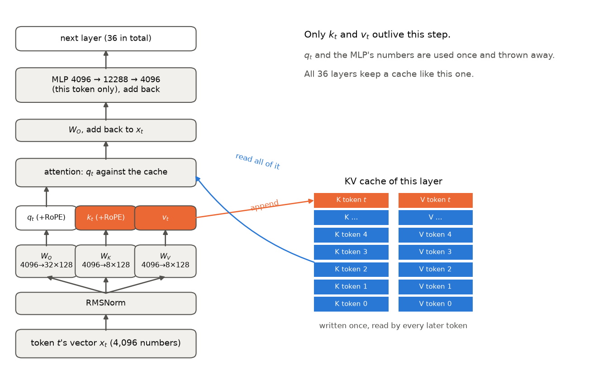
Keeping 32 agents warm on one GPU
Inference
KV cache
What a KV cache is, why coding agents make it the most important thing in GPU memory, and how far one RTX PRO 6000 gets toward serving 32 of them.
When you chat with a language model, the reply shows up one word at a time (in this post, “word” and “token” mean the same thing; tokens get a proper definition in a moment). That is not a stylistic choice. The model really does work that way: it writes one word, then looks at everything so far (your whole conversation, plus its reply up to that point) and writes the next one.
“Looks at everything so far” sounds expensive. It would be, if the model reread the whole conversation from scratch for every word. It does not. As it reads, it keeps notes on every word it has already seen, and for each new word it only has to consult those notes.
Those notes are called the KV cache. K and V stand for “keys” and “values”, and they work like the keys and values of a dictionary:
- a key is a label. You match against it to decide whether this entry is the one you want.
- a value is the content. It is what you take away once you have picked the entry.
Every word the model reads gets one of each. Its key describes what the word is about, and its value is the information the word passes on to whoever picks it. Both are nothing more exotic than lists of numbers (vectors). The model is a stack of layers (a transformer), and every layer computes its own key and value for every word.
A new word uses them to look back. Say the model has written “the cat” and is now working on “sat”. Each layer takes what “sat” is looking for (its query), compares it against the keys of “the” and “cat”, and finds that “cat” matches best. It then pulls in mostly the value of “cat”, and a little of “the”. Unlike a real dictionary, the lookup is soft: every entry contributes, weighted by how well its key matches. This looking back is called attention.
The keys and values of “the” and “cat” are the same no matter what comes after them. So the model can keep them and reuse them for every later word. If it does not keep them, it has to recompute them, and that means running “the” and “cat” through every layer of the model again, for every new word.
How much does keeping them save? I measured it. I gave a model (Qwen3-8B) a long conversation, about 64,000 words, on the GPU I used for this post. With its notes, the model wrote each new word in 18 milliseconds. Without them, rereading the conversation took 6.2 seconds per word. That is 346 times slower.
The notes have a price, though. For that one conversation they take up 9.7 GB of the GPU’s memory, more than half the size of the model itself. That memory is scarce, because a GPU serving many conversations has to hold everyone’s notes at once. The notes also have to be read, all of them, for every new word. And if they are ever thrown away to make room for someone else, rebuilding them costs those 6.2 seconds again.
This is a long post, and it grows one chapter at a time. Chapter 0 builds the KV cache from scratch: what a model does with a word, what keys and values are, why they can be kept, and what keeping them costs, measured on a real GPU. Then it puts the cache under the hardest load I know, coding agents, and sets a target: serve 32 of them on one GPU. Every chapter after that takes one way this target fails and works on it.
What every number in this post ran on
- GPU. One NVIDIA RTX PRO 6000 Blackwell Server Edition, 96 GB of memory.
- Engine. SGLang 0.5.23 (torch 2.14.1, CUDA 13.0, FlashInfer 0.7.2), an open-source inference server: the program that holds the model in GPU memory, accepts requests, batches them and manages the cache. It may use 85% of GPU memory for weights and caches.
- Model. Qwen3-8B. It was trained for 32K-token conversations; I run it at 131,072 tokens using YaRN, a standard trick that stretches the model’s sense of position by a factor of 4.
python -m sglang.launch_server --model-path Qwen/Qwen3-8B \
--json-model-override-args '{"rope_scaling":{"rope_type":"yarn","factor":4.0,"original_max_position_embeddings":32768},"max_position_embeddings":131072}' \
--context-length 131072 --mem-fraction-static 0.85 --kv-cache-dtype bf16 --enable-metricsEvery measurement below uses this server with at most one flag changed; each callout says which.
Chapter 0: What a KV cache is, and what it costs
How a language model writes
A language model reads and writes tokens, which are chunks of text, usually a word or part of one. Qwen’s tokenizer splits “def flush_cache():” into 4 of them: def, flush, _cache, ():. The model’s whole job is to look at a sequence of tokens and output, for every token in its vocabulary, a probability that it comes next.
To write a reply, you run that in a loop:
- Feed in the conversation so far.
- Pick the next token from the probabilities.
- Append it to the conversation.
- Go back to 1.
This is autoregressive generation. A 500-token reply is 500 trips around the loop, and each trip produces exactly one token. Hold on to that loop; the KV cache exists because of it.
Inside a transformer
The model is a big function with billions of numbers inside it, called parameters or weights. Qwen3-8B has about 8 billion, and I host it in BF16. At 2 bytes each that is 16 GB, and all of it has to sit in GPU memory, because every token passes through all of it.
Those weights are arranged as a transformer:
- An embedding table turns each token into a list of 4,096 numbers, a vector. Think of it as the token’s running notes.
- A stack of 36 identical layers each reads those notes and adds to them. Each layer has two parts:
- attention, the only place where a token reads other tokens’ notes, and
- an MLP, which processes each token’s notes on its own.
- An output layer turns the last token’s final notes into next-token probabilities.
Here is one layer, from the point of view of the newest token \(t\):
The token’s vector is normalized (RMSNorm just rescales it), then multiplied by three weight matrices, \(W_Q\), \(W_K\) and \(W_V\). That gives three new vectors: a query \(q_t\), a key \(k_t\) and a value \(v_t\). Attention uses them to pull in information from earlier tokens, \(W_O\) mixes the result back into the token’s vector, and the MLP processes it further.
How big are these pieces? The shapes in Figure 1 are enough to count every weight in a layer:
| Piece | Shape | Weights | Share of the layer |
|---|---|---|---|
| \(W_Q\) | 4096 × (32·128) | 16.8M | 8.7% |
| \(W_K\) | 4096 × (8·128) | 4.2M | 2.2% |
| \(W_V\) | 4096 × (8·128) | 4.2M | 2.2% |
| \(W_O\) | (32·128) × 4096 | 16.8M | 8.7% |
| MLP (3 matrices) | 3 × 4096 × 12288 | 151.0M | 78.3% |
| One layer | 193M | ||
| × 36 layers | 6.946B | (the checkpoint says 6.946B) |
The count matches the checkpoint to within the tiny normalization weights, so the picture is right. And look at where the weights are: the key and value projections are only 4% of each layer.
Attention, and what K and V depend on (the precise version)
This is the intro’s soft dictionary lookup, written out precisely for one layer. Write \(x_i^{(\ell)}\) for token \(i\)’s vector as it enters layer \(\ell\). The query, key and value are three projections of it (the \(W_Q\), \(W_K\), \(W_V\) boxes in Figure 1):
\[ q_i^{(\ell)} = \text{RoPE}_i\!\left(W_Q^{(\ell)}\, \text{norm}\big(x_i^{(\ell)}\big)\right), \qquad k_i^{(\ell)} = \text{RoPE}_i\!\left(W_K^{(\ell)}\, \text{norm}\big(x_i^{(\ell)}\big)\right), \qquad v_i^{(\ell)} = W_V^{(\ell)}\, \text{norm}\big(x_i^{(\ell)}\big) \]
RoPE (rotary position embedding) is how the model knows where tokens are. It rotates pairs of numbers inside the query and the key by an angle proportional to the token’s position, so their dot product ends up depending on how far apart the two tokens are.
Token \(t\)’s output scores its query against the key of every token up to and including itself, turns the scores into weights that sum to 1 with a softmax, and takes the weighted average of the values:
\[ o_t = \sum_{i \le t} \underbrace{\text{softmax}_i\!\left(\frac{q_t \cdot k_i}{\sqrt{H}}\right)}_{\text{how much token } t \text{ attends to token } i} \; v_i \]
\(H\) is the vector length, and dividing by \(\sqrt{H}\) keeps the scores in a sane range. Qwen3-8B does this with 32 heads per layer, each with its own query of length \(H = 128\), each free to look for something different. And a token only ever looks backwards, \(i \le t\). This is causal attention.
Because attention is causal, token \(i\)’s key and value are built only from tokens \(0 \dots i\). Three things follow:
- They never change once computed, so they can be cached.
- They are expensive to rebuild: \(W_K\) and \(W_V\) are only 4% of a layer, but \(k_i\) at layer 20 needs token \(i\) to pass through layers 1–19 first.
- They are only valid behind the exact same prefix, since they depend on every earlier token and, through RoPE, on position.
Just as important is what does not need keeping. The query is used once, by its own token. The MLP’s intermediate numbers are thrown away. Even \(x_i\) itself can go, since its only lasting purpose was producing \(k_i\) and \(v_i\).
Why there is a cache at all
A token’s key and value depend only on the tokens up to it, so once computed they never change. When the model writes token 1,001, the keys and values of tokens 1 to 1,000 are exactly the ones it computed on the previous trip. So there are two ways to run the loop:
- Recompute. Run the whole conversation through the model again for every new token.
- Store. Keep every key and value from every head of every layer. For each new token, compute only its query, key and value, and read the old keys and values from memory.
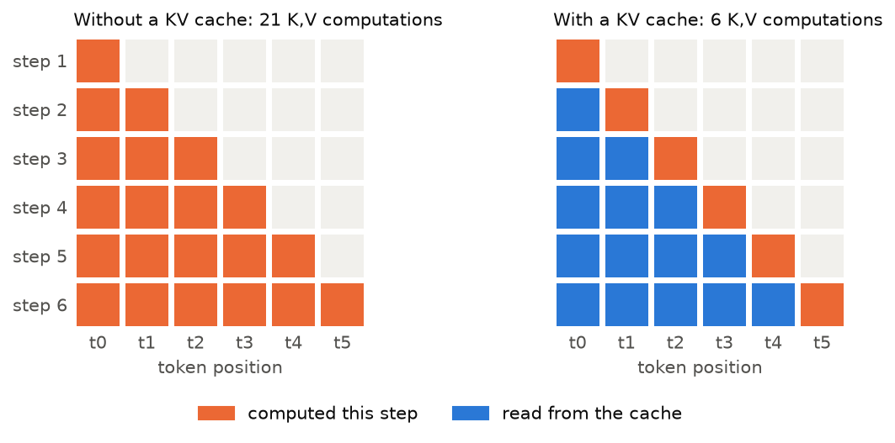
Six tokens: 21 computations against 6. The gap grows quadratically, so let us count it properly.
A FLOP is one floating-point operation, a multiply or an add. Pushing one token through a weight matrix with \(P\) numbers in it costs \(2P\) FLOPs: one multiply and one add per weight. So one token through the whole model costs about \(2P\) FLOPs, and generating \(n\) tokens after an \(S\)-token prompt costs
\[ \text{recompute: } \sum_{j=0}^{n-1} 2P\,(S + j) \approx 2P\left(nS + \tfrac{n^2}{2}\right) \qquad\qquad \text{store: } 2Pn \]
How much more work is recomputing? Divide the two:
\[ \frac{\text{recompute}}{\text{store}} = \frac{2P\left(nS + \tfrac{n^2}{2}\right)}{2Pn} = S + \frac{n}{2} \]
For a 64K-token conversation (\(S = 65{,}536\)) and a 500-token reply (\(n = 500\)), that is \(65{,}536 + 250\): recomputing does about 65,786× more work than storing. And that counts only the matmuls; attention makes recomputing worse still. The memory in option 2 is the KV cache, named after what it holds.
So the KV cache trades compute for memory: it stores what it would otherwise recompute. There is a third side to the trade. Stored numbers are only useful once they are moved from memory to the GPU’s math units, so the cache also spends communication: bytes moved per second. These three sides, compute, memory and communication, are the trade-off this whole post keeps coming back to.
The trade-off: compute, memory and communication
Memory. For every token, the cache stores one key vector and one value vector per key/value head, in every attention layer. With \(L_\text{attn}\) attention layers, \(K\) key/value heads of dimension \(H\), and \(b\) bytes per number,
\[ \text{KV bytes per token} = 2 \cdot L_\text{attn} \cdot K \cdot H \cdot b \]
The factor of 2 counts keys and values. For Qwen3-8B, \(L_\text{attn} = 36\), \(H = 128\) and \(K = 8\). Note that \(K\) is 8, not the 32 query heads of Figure 1: \(W_K\) and \(W_V\) produce only 8 heads’ worth of keys and values, and each group of 4 query heads shares one of them. This is grouped-query attention (GQA; Ainslie et al., 2023). In BF16 (\(b = 2\)),
\[ 2 \cdot 36 \cdot 8 \cdot 128 \cdot 2 = 147{,}456 \text{ bytes} = 144 \text{ KiB per token} \]
Figure 3 compares this with the size of the model itself.
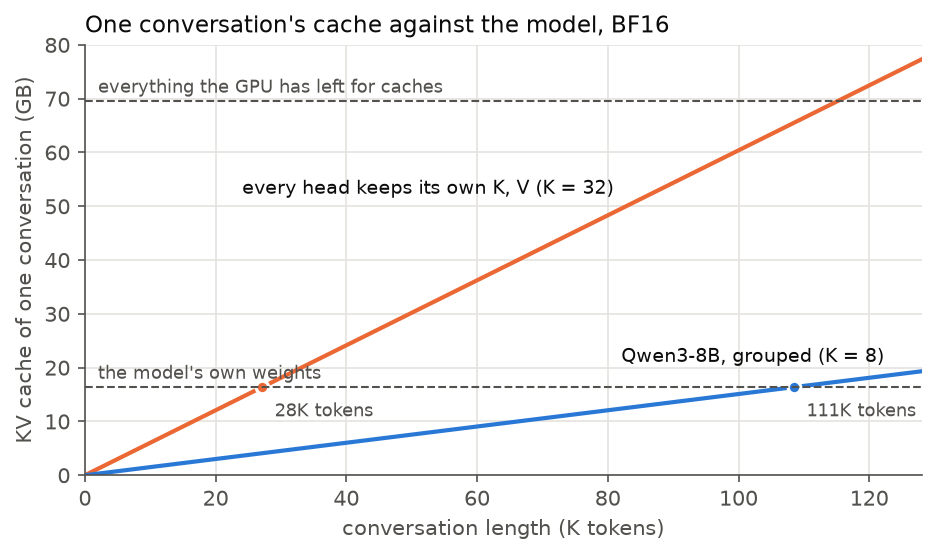
GQA is one way of making this trade-off. Sharing each key/value head among \(N / K = 4\) query heads divides the cache by 4, which reduces both the memory a token occupies and the bytes every decode step must read. It leaves the cost of recomputation almost unchanged: \(W_K\) and \(W_V\) account for only 4% of a layer’s weights, and rebuilding a token’s keys and values still requires running it through every layer. The cost is some model quality, since four query heads now attend over the same keys. With GQA, one conversation’s cache exceeds the model’s weights at 111K tokens; without it, at 28K, and a single 120K-token conversation would not fit on this GPU.
How much fits. SGLang loads the weights, reserves working memory for in-flight computation, and allocates the rest of its 85% budget as a single cache pool. We therefore expect a pool of \(0.85 \times 95.6 \text{ GiB} - 15.3 \text{ GiB of weights} \approx\) 70.9 GB. The server’s startup log reports what it actually allocated:
Load weight end. elapsed=0.92 s, type=Qwen3ForCausalLM, avail mem=78.95 GB, mem usage=15.32 GB.
KV Cache is allocated. dtype: torch.bfloat16, #tokens: 471816, K size: 32.40 GB, V size: 32.40 GB
max_total_num_tokens=471816, chunked_prefill_size=8192, max_prefill_tokens=16384, max_running_requests=2048, context_len=131072, available_gpu_mem=10.51 GBThe pool holds 471,816 tokens (69.6 GB), 2% below the estimate; the difference is working buffers. This is the memory budget of the whole server: 472K tokens of cache shared by every conversation, or 7.2 conversations of 64K tokens.
Command: cache capacity per model and number format
Launch the server once per cache format (bf16, fp8_e4m3, nvfp4) and read the pool size it allocated:
python -m sglang.launch_server --model-path Qwen/Qwen3-8B \
--json-model-override-args '{"rope_scaling":{"rope_type":"yarn","factor":4.0,"original_max_position_embeddings":32768},"max_position_embeddings":131072}' \
--context-length 131072 --mem-fraction-static 0.85 --enable-metrics \
--kv-cache-dtype bf16
# the startup log prints it:
# KV Cache is allocated. dtype: torch.bfloat16, #tokens: 471816, K size: 32.40 GB, V size: 32.40 GB
# or ask the running server:
curl -s localhost:30000/metrics | grep max_total_num_tokensCompute and communication. A GPU has a peak compute rate \(C\), the floating-point operations (FLOPs) per second its math units can perform, and a memory bandwidth \(W\), the bytes per second it can move from memory to those units. An operation must both load its inputs and compute on them, and the two overlap, so its runtime is bounded below by the slower of the two, and in practice lands close to that bound:
\[ t \approx \max\left(\frac{\text{FLOPs}}{C},\ \frac{\text{bytes}}{W}\right) \]
Which term dominates depends on the operation’s arithmetic intensity, the number of FLOPs it performs per byte it loads. On this GPU, a large BF16 matrix multiply runs at \(C\) = 373 TFLOP/s, and a large device-to-device copy at \(W\) = 1.46 TB/s (81% of the specification). Their ratio is the intensity at which the two terms are equal:
\[\frac{C}{W} = \frac{373 \times 10^{12}}{1.46 \times 10^{12}} \approx 255 \text{ FLOPs per byte}\]
An operation with intensity above 255 FLOPs per byte is compute-bound. Below it, the operation is bandwidth-bound, and the math units wait on memory. Plotting attainable throughput against intensity gives the roofline (Austin et al., 2025):
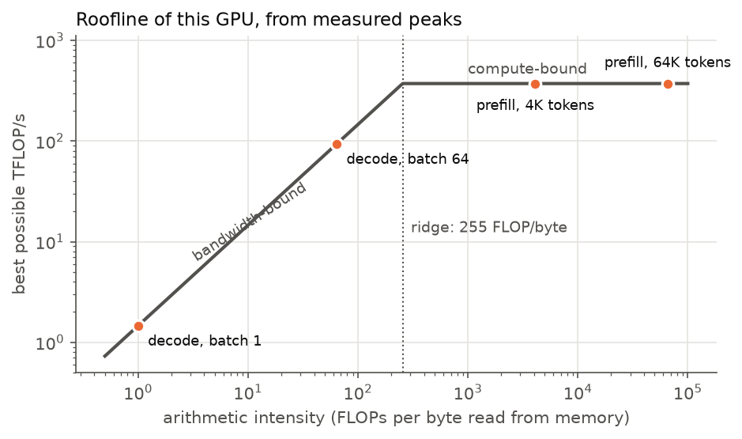
Command: measuring C, W and the host link
import torch
def seconds(fn, iters=20):
for _ in range(3):
fn()
start, end = torch.cuda.Event(enable_timing=True), torch.cuda.Event(enable_timing=True)
start.record()
for _ in range(iters):
fn()
end.record()
torch.cuda.synchronize()
return start.elapsed_time(end) / 1e3 / iters
n = 8192
a = torch.randn(n, n, device="cuda", dtype=torch.bfloat16)
print(f"C = {2 * n**3 / seconds(lambda: a @ a) / 1e12:.0f} TFLOP/s")
src = torch.empty(4 << 30, dtype=torch.uint8, device="cuda")
dst = torch.empty_like(src)
print(f"W = {2 * src.numel() / seconds(lambda: dst.copy_(src), 10) / 1e12:.2f} TB/s") # a copy reads and writes every byte
host = torch.empty(1 << 30, dtype=torch.uint8, pin_memory=True)
print(f"host -> GPU = {host.numel() / seconds(lambda: src[:1 << 30].copy_(host, non_blocking=True), 10) / 1e9:.0f} GB/s")The cache splits the generation loop into two jobs that sit at opposite ends of this plot. Prefill processes a new prompt of \(T\) tokens all at once, fills the cache, and produces the first new token; its duration is the time to first token (TTFT). Decode is every token after that, one trip through the model per token, reading the cache.
Prefill loads each weight once (2 bytes) and uses it for all \(T\) tokens (2 FLOPs each), so its intensity is about \(T\), far past the ridge for any real prompt. Prefill is compute-bound, and its time is FLOPs over \(C\). Those FLOPs come in two kinds: \(2P\) per token for the matmuls, and, for attention, \(4H\) per (query, key) pair per head, two for the dot product and two for the weighted sum of values. A prompt of \(T\) tokens has \(T^2/2\) pairs (the triangle in Figure 2), across \(L_\text{attn}\) layers of \(N\) heads:
\[ \text{FLOPs}_\text{prefill}(T) = \underbrace{2PT}_{\text{matmuls}} + \underbrace{2 \cdot L_\text{attn} \cdot N \cdot H \cdot T^2}_{\text{attention}} \]
For Qwen3-8B, \(2 \cdot 36 \cdot 32 \cdot 128 = 294{,}912\) against \(2P = 13.9 \times 10^9\), so the quadratic attention term overtakes the matmuls at \(T \approx 47{,}000\) tokens. Measured with cache reuse off, one request at a time, three runs per length:
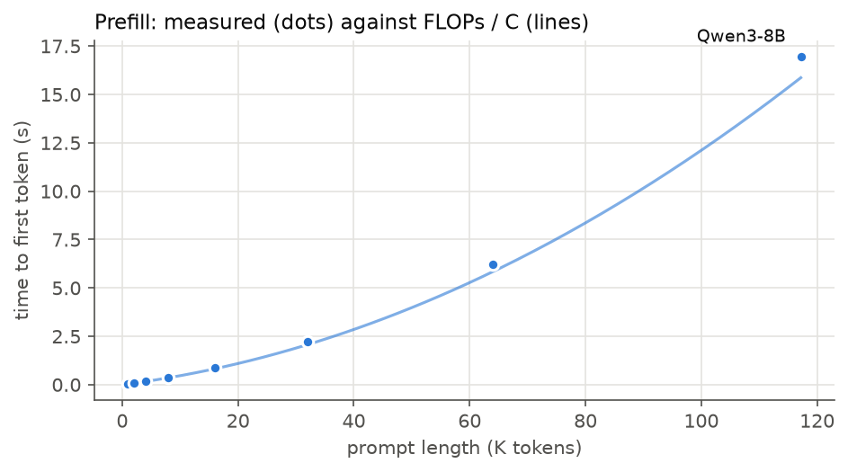
| Prompt | Measured | Estimate (FLOPs / C) | Share of peak achieved |
|---|---|---|---|
| 1K | 0.05 s | 0.04 s | 78% |
| 2K | 0.09 s | 0.08 s | 88% |
| 4K | 0.18 s | 0.17 s | 93% |
| 8K | 0.38 s | 0.36 s | 94% |
| 16K | 0.88 s | 0.82 s | 94% |
| 32K | 2.20 s | 2.07 s | 94% |
| 64K | 6.20 s | 5.84 s | 94% |
| 120,000 | 16.95 s | 15.87 s | 94% |
From 8K tokens up, the server runs at 94% of the measured peak; below that, fixed costs like kernel launches show, about a fifth of the time at 1K. A two-term formula landing this close means this kind of back-of-envelope estimate (napkin math) can be trusted for the rest of the post, and when a real run disagrees with it, the disagreement means something. This is the compute side of the trade: prefill is what building a cache costs, and therefore also what losing one costs. 6.2 s for a 64K conversation, with the quadratic term making long conversations disproportionately expensive to lose.
Command: prefill timing
Start the server with cache reuse off, so every request is a cold prefill:
python -m sglang.launch_server --model-path Qwen/Qwen3-8B \
--json-model-override-args '{"rope_scaling":{"rope_type":"yarn","factor":4.0,"original_max_position_embeddings":32768},"max_position_embeddings":131072}' \
--context-length 131072 --mem-fraction-static 0.85 --enable-metrics \
--disable-radix-cacheThen time the first streamed token for prompts of random token ids:
import random, time, requests
def ttft(n_tokens):
ids = [random.randrange(1000, 150_000) for _ in range(n_tokens)]
body = {"input_ids": ids, "stream": True, "sampling_params": {"max_new_tokens": 1, "temperature": 0}}
start = time.perf_counter()
with requests.post("http://localhost:30000/generate", json=body, stream=True) as r:
for line in r.iter_lines():
if line.startswith(b"data:"):
return time.perf_counter() - start
ttft(4096) # warm-up
for n in (1024, 2048, 4096, 8192, 16384, 32768, 65536, 120_000):
print(n, sorted(ttft(n) for _ in range(3))[1]) # median of 3Decode. Decode is every token after the first. Each step pushes one new token per sequence through the model, and its cost has two parts: the weights and the cache. We count bytes and FLOPs for each, as for prefill.
The weights. With one sequence, each weight is loaded once (2 bytes in BF16) and used for one multiply-add (2 FLOPs). That is an intensity of 1 FLOP per byte, far to the left of the ridge in Figure 4, so a single sequence is bandwidth-bound: the step takes as long as reading the weights, \(2P / W\). Batching helps here. If \(B\) sequences decode in the same step, each weight is loaded once and used \(B\) times, so the matmuls cost \(2BP\) FLOPs for the same \(2P\) bytes, an intensity of \(B\). Loading stays the bottleneck, and extra sequences come almost for free, until compute time catches up with load time:
\[\frac{2BP}{C} = \frac{2P}{W} \quad\Longrightarrow\quad B_\text{crit} = \frac{C}{W} \approx 255 \text{ sequences}\]
The cache. Batching does not help with the cache. Each sequence has its own keys and values, and to compute attention for its new token, every layer must read all of them. A key or value loaded for one sequence is used only by that sequence’s queries, so the cache read stays bandwidth-bound at any batch size, and it grows with both \(B\) and the context length \(S\): \(B \cdot S \cdot \text{KV bytes per token}\) bytes per step.
Adding the two parts gives the time of one decode step:
\[ t_\text{step}(B, S) = \underbrace{\frac{B \cdot S \cdot \text{KV bytes per token}}{W}}_{\text{read every sequence's cache}} + \underbrace{\max\left(\frac{2BP}{C}, \frac{2P}{W}\right)}_{\text{weights: compute or load, whichever is slower}} \]
Example. Take one 64K-token conversation on Qwen3-8B: \(B = 1\) and \(S = 65{,}536\). The weights term reads \(2P\) bytes, with \(P\) = 7.57B weights in the matmuls, and the cache term reads \(S \cdot \text{KV bytes per token}\), with the 147,456 bytes per token derived above:
\[ \frac{2P}{W} = \frac{2 \times 7.57 \times 10^9 \text{ B}}{1.46 \text{ TB/s}} = \frac{15.1 \text{ GB}}{1.46 \text{ TB/s}} = 10.4 \text{ ms} \qquad \frac{S \cdot \text{KV bytes per token}}{W} = \frac{65{,}536 \times 147{,}456 \text{ B}}{1.46 \text{ TB/s}} = \frac{9.7 \text{ GB}}{1.46 \text{ TB/s}} = 6.6 \text{ ms} \]
So the formula predicts 10.4 + 6.6 ≈ 17 ms per token. With four such conversations (\(B = 4\)), the weights are still read once but four caches are read: 10.4 + 4 × 6.6 ≈ 37 ms per step. These are predictions; the measured steps are 18 ms and 37 ms (the 64K line of Figure 6).
To check the formula, I sent \(B\) requests of \(S\) tokens at once, each generating 96 tokens, and took the step time as the median gap between consecutive tokens once all \(B\) were decoding:
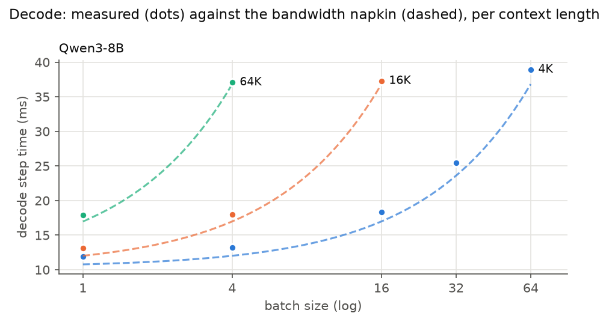
Every point lands within 11% of the formula. On the 4K line, 64 sequences make each step only 3.3× slower than one, for 64× the tokens: batching works as promised. On the 64K line, a step takes 18 ms at batch 1 and 37 ms at batch 4, and batch 16 does not fit at all. Splitting each step into its two terms shows why:
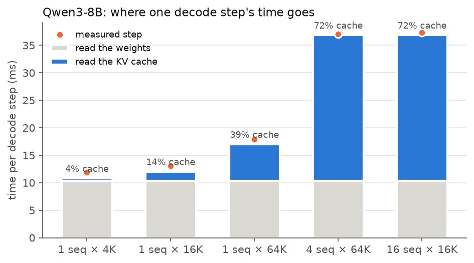
At short context, decode is a weight-reading job and the cache is noise. At 64K, the cache is 39% of the step for a single conversation, and once a few long conversations share the GPU, most of every step goes to re-reading keys and values. That is the communication side of the trade: the cache saves recomputing the past, and in exchange the whole past streams through the GPU for every new token.
Command: decode step time
Same server as the prefill measurement (cache reuse off). Send \(B\) requests at once, generate 96 tokens each, and take the median gap between consecutive tokens once all of them are decoding. Skip batches whose total context does not fit in the pool.
import asyncio, random, time
import aiohttp
async def token_times(http, n_ctx, n_out=96):
ids = [random.randrange(1000, 150_000) for _ in range(n_ctx)]
body = {"input_ids": ids, "stream": True,
"sampling_params": {"max_new_tokens": n_out, "temperature": 0, "ignore_eos": True}}
stamps = []
async with http.post("http://localhost:30000/generate", json=body) as r:
async for line in r.content:
if line.startswith(b"data:") and b"[DONE]" not in line:
stamps.append(time.perf_counter())
return stamps
async def step_time(batch, n_ctx):
# force_close: never reuse a connection the server may already have closed
async with aiohttp.ClientSession(connector=aiohttp.TCPConnector(force_close=True)) as http:
runs = await asyncio.gather(*(token_times(http, n_ctx) for _ in range(batch)))
steady = max(r[0] for r in runs) # from here on, every request is decoding
gaps = sorted(b - a for r in runs for a, b in zip(r, r[1:]) if a >= steady)
return gaps[len(gaps) // 2]
for n_ctx in (4096, 16384, 65536):
for batch in (1, 4, 16, 32, 64):
print(batch, n_ctx, f"{asyncio.run(step_time(batch, n_ctx)) * 1e3:.1f} ms")In summary, for Qwen3-8B in BF16 on this GPU, the KV cache replaces a 6.2 s recomputation with a 18 ms decode step, and charges each of the three resources as follows:
| Resource | Quantity | Formula | Qwen3-8B, BF16, this GPU |
|---|---|---|---|
| Memory | bytes held per cached token | \(2 \cdot L_\text{attn} \cdot K \cdot H \cdot b\) | 144 KiB per token; a pool of 472K tokens |
| Communication | time per decode step spent reading the cache | \(B \cdot S \cdot \text{KV bytes per token} / W\) | 6.6 ms per step for each 64K-token sequence |
| Compute | FLOPs to rebuild a lost cache of \(T\) tokens (time = FLOPs / \(C\)) | \(2PT + 2 \cdot L_\text{attn} \cdot N \cdot H \cdot T^2\) | 6.2 s for a 64K-token prefill, growing quadratically with \(T\) |
Takeaway: the cache converts a compute cost into a memory cost and a communication cost. Holding it limits how many sequences fit, reading it limits how fast each one decodes, and losing it costs a full prefill.
All of this concerns one conversation at a time. A server holds many conversations in one shared pool and must decide whose cache stays when the pool is full. The workload that stresses all three resources at once is coding agents.
Why agents are the hard case
A coding agent works in a loop. Asked to fix a bug, it searches the repository, reads a file, runs the tests, edits the code and runs the tests again. Each of these steps is a tool call: the model emits a command, stops, and waits for the result. When the result arrives, the model receives the whole conversation again, now slightly longer, and continues.
In terms of the trade-off:
- Contexts are long. The conversation grows with every file read and every test log, which raises both the memory a session holds and the bytes every decode step reads.
- Caches sit idle between turns. While a tool runs, the session’s cache occupies GPU memory without being used. The agent will return with the same prefix plus a few new tokens. If the cache is evicted in the meantime, the next turn pays a full prefill.
For agents, then, the cache has to survive the tool call. The question for the rest of this post is: how many agents can one GPU keep warm without making any of them wait?
To make “without making any of them wait” measurable, I set the following targets for one RTX PRO 6000. They are my own choices rather than an external standard; each maps onto one of the costs above.
| ID | Requirement | Target | Which part of the cache it tests |
|---|---|---|---|
| R1 | Agent sessions served at the same time | 32 | memory: do 32 caches fit? |
| R2 | Wait before the first token of each reply (p90 TTFT) | < 1.0 s | compute: was the cache still there, or must it be rebuilt? |
| R3 | Speed of each reply, per user | ≥ 30 tokens/s | communication: reading caches every step |
| R4 | Quality | no measurable change | any trick that shrinks the cache by approximating it |
| R5 | After a server restart | back to normal within 5 minutes | a restart empties GPU memory: everyone has to rebuild at once |
| R6 | Isolation | one customer learns nothing about another | a shared cache answers faster for prompts someone else already sent |
Each section from here on starts from one of these requirements failing.
What agent traffic looks like
The workload comes from SemiAnalysis’s AgentX traces, recordings of real Claude Code sessions. For every request they give the number of input and output tokens, the timing, and a hash of every 64-token block of the prompt. They contain no text.
Three terms are used throughout. A session is one agent working on one task from start to finish. Each call the agent makes to the model is a request (or turn). A request’s input is its context: the whole conversation so far, including every tool result.
One request, as it appears in the trace (the sixth request of session 0bcd9935…, with the hash list shortened):
{"t": 137.214, "model": "claude-opus-4-8", "in": 65664, "out": 4374,
"api_time": 22.603, "ttft": 1.36,
"hash_ids": [5, 6, 7, 8, 9, ..., 946, 947, 948, 2702, 2703, ..., 2856, 2857]}t is when the request was sent, in seconds from the start of the session. in and out are its input and output tokens, api_time the time the model took to answer, and ttft the time to its first output token. hash_ids has one entry per 64-token block of the input, 1,026 here. Two blocks with the same hash hold the same tokens, so hashes show which parts of a prompt were already sent earlier in the session. In this request, the first 870 hashes are exactly those of the request before it, and the new tokens start at block 2702.
If the trace has no text, what does the model read?
The numbers in hash_ids are block identifiers, not token IDs. A block ID tells us when a 64-token piece of a prompt appeared again; it does not tell us the words or tokens in that piece. The IDs are local to a trace, so an ID in one session cannot establish that a block is shared with another session.
Qwen still needs actual token IDs. One way to replay a trace is to assign each block ID a made-up sequence of 64 valid token IDs, reuse that same sequence whenever the block ID reappears in the trace, and send the resulting prompt to the server. For example, if [5, 6] becomes [A, B], then [5, 6, 7] becomes [A, B, C], where each letter stands for 64 token IDs. The server sees the same prefix [A, B] on both requests. This is the approach described by the AIPerf Weka trace loader.
The trace can supply request sizes, timing and block-level reuse; it cannot recover the original conversation or tell us whether the model’s answer is useful. In Chapter 1, my controlled workload sends random token IDs as input_ids, with sizes fitted to AgentX. Later trace-driven runs use the recorded request sizes and tool waits. The saved results here do not include the replay harness, so they do not by themselves establish exactly how its block IDs were mapped to tokens.
The small conversation in the next section is a separate example I wrote out, to show what a real prompt could contain. It is not the missing text from this trace.
The same session over consecutive requests:
| Request | Sent at | Input tokens | Output tokens | Model time | Input shared with the previous request |
|---|---|---|---|---|---|
| 5 | 14 s | 55,680 | 1,903 | 10.3 s | – |
| 6 | 137 s | 65,664 | 4,374 | 22.6 s | 55,680 (85%) |
| 7 | 220 s | 69,248 | 4,561 | 24.9 s | 65,664 (95%) |
| 8 | 410 s | 72,704 | 1,804 | 10.7 s | 69,248 (95%) |
| 9 | 422 s | 75,520 | 21 | 1.1 s | 72,704 (96%) |
| 10 | 602 s | 75,008 | 86 | 1.6 s | 74,944 (100%) |
Several requests extend the previous input, though request 10 is shorter than request 9. The added input is not simply the model’s previous reply: request 6 produced 4,374 output tokens, yet request 7’s input is only 3,584 tokens longer. The trace does not show what accounts for the difference. Between requests, the session waits on its tools: 60 s from request 6’s answer to request 7, and 165 s before request 8.
What an agent’s context contains
A chat request is a prompt in and a reply out. An agent request is one step of a loop, and its prompt is the entire history of that loop. The traces record only sizes, so to show what the tokens actually are, I wrote out one small session by hand and rendered it with Qwen3-8B’s own chat template, which produces the exact token sequence the server receives. In this session, a test fails after a refactor of a 30-line LRU cache. The agent searches for the class, reads the file, runs the tests, fixes the bug, reruns the tests, and reports.
The layout of a request. Every request is a single sequence of tokens, divided into messages by role markers (<|im_start|>, <|im_end|>). This is the second request of the session in full:
<|im_start|>system
You are a coding agent working in the user's repository. You can read files, search the code,
run shell commands and edit files with the tools below. Work in small steps: look before you change
anything, run the tests after every edit, and stop when the tests pass. Keep answers short.
# Tools
You may call one or more functions to assist with the user query.
You are provided with function signatures within <tools></tools> XML tags:
<tools>
{"type": "function", "function": {"name": "grep", "description": "Search the repository for a regular expression. Returns matching lines as path:line: text.", "parameters": {"type": "object", "properties": {"pattern": {"type": "string"}, "path": {"type": "string", "description": "directory to search, default ."}}, "required": ["pattern"]}}}
{"type": "function", "function": {"name": "read_file", "description": "Return the contents of a file with line numbers.", "parameters": {"type": "object", "properties": {"path": {"type": "string"}}, "required": ["path"]}}}
{"type": "function", "function": {"name": "bash", "description": "Run a shell command in the repository root and return its stdout and stderr.", "parameters": {"type": "object", "properties": {"command": {"type": "string"}}, "required": ["command"]}}}
{"type": "function", "function": {"name": "edit_file", "description": "Replace one exact occurrence of old_text with new_text in a file.", "parameters": {"type": "object", "properties": {"path": {"type": "string"}, "old_text": {"type": "string"}, "new_text": {"type": "string"}}, "required": ["path", "old_text", "new_text"]}}}
</tools>
For each function call, return a json object with function name and arguments within <tool_call></tool_call> XML tags:
<tool_call>
{"name": <function-name>, "arguments": <args-json-object>}
</tool_call><|im_end|>
<|im_start|>user
test_lru.py::test_evicts_least_recent fails after my refactor of lru.py. Please fix it.<|im_end|>
<|im_start|>assistant
<think>
The test is about eviction order. Find where LRUCache is defined.
</think>
<tool_call>
{"name": "grep", "arguments": {"pattern": "class LRUCache"}}
</tool_call><|im_end|>
<|im_start|>user
<tool_response>
lru.py:4:class LRUCache:
</tool_response><|im_end|>
<|im_start|>assistant
It contains, in order:
- The system prompt: standing instructions for the agent.
- The tool definitions: a JSON schema for each tool the agent may call. They are part of the prompt, so the model reads them on every request.
- The user’s task.
- The model’s previous turn: its reasoning, inside
<think>, and a tool call, a JSON object inside<tool_call>. The model does not run the tool. It stops generating, and the agent’s harness runs the command. - The tool’s result, inside
<tool_response>, sent back in ausermessage. - The generation prompt
<|im_start|>assistant, which asks the model for its next step.
The next request is this same sequence followed by the model’s reply and the next tool result. The prompt is never rewritten, only extended.
Request by request. For this illustration, assume the server keeps the keys and values of the previous request’s prompt and its generated reply. The next request can reuse that prefix and prefill only what the harness appended: the tool result and a few role markers.
| Request | What the agent does next | Already in the cache | New tokens | Input tokens | Generated |
|---|---|---|---|---|---|
| 1 | search for the class (grep) |
0 | 478 | 478 | 42 |
| 2 | read the file (read_file) |
520 | 21 | 541 | 41 |
| 3 | run the tests (bash) |
582 | 298 | 880 | 50 |
| 4 | edit the file (edit_file) |
930 | 263 | 1,193 | 87 |
| 5 | rerun the tests (bash) |
1,280 | 20 | 1,300 | 40 |
| 6 | final answer | 1,340 | 85 | 1,425 | 36 |
Read each row from left to right. Already in the cache is the part of the input whose keys and values are available from earlier work. New tokens are what the harness appended to that cached prefix; the server computes their keys and values during prefill. Together they make the entire input:
\[ \text{Already in the cache} + \text{New tokens} = \text{Input tokens} \]
Generated is the model’s new reply. It comes after the input in that row; it is not included in that row’s input count. Here is how the counts move through the session:
- Search. The first request has 478 input tokens and nothing cached, so it prefills all 478. The model then generates 42 tokens, including its call to
grep. - Read the file. The
grepresult is added to the conversation. The new input has 541 tokens. In this example, the previous 478 input tokens and 42 generated tokens are cached: 478 + 42 = 520. That leaves 541 − 520 = 21 tokens to prefill. The model then generates 41 more tokens, including the call toread_file. - Run the tests. The file contents are added. Of the 880 input tokens, 541 + 41 = 582 are already cached. The server prefills the remaining 880 − 582 = 298, then the model generates 50.
- Edit the file. After the test output is added, the input is 1,193 tokens. The cached prefix is 880 + 50 = 930, leaving 263 to prefill. The model generates 87 tokens.
- Rerun the tests. The 1,300-token input includes 1,280 cached tokens: 1,193 from the previous input plus 87 generated tokens. Only 20 need prefilling. The model generates 40 tokens.
- Answer. The test result brings the input to 1,425 tokens. Of these, 1,300 + 40 = 1,340 are cached, so 85 are prefilled. The model then generates the 36-token final answer.
This accounting assumes that the previous input and its generated reply remain cached and appear unchanged at the start of the next input. It illustrates the reuse the session makes possible. In a real server, eviction, changes to the prompt, or whether the final generated token has been processed into the cache can change the actual count.
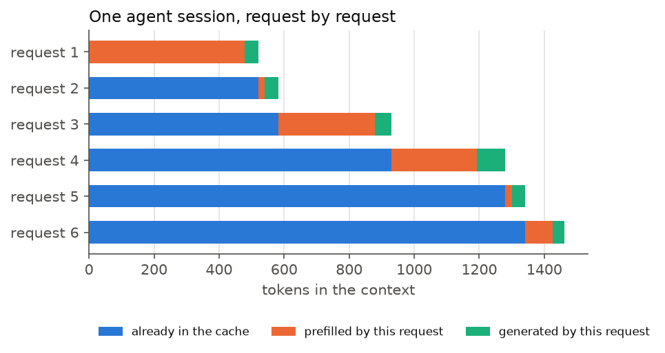
Each bar is the previous bar plus a short new segment. Request 3 prefills 298 tokens, almost all of them the file the agent just read; request 4 prefills the test log. Everything else is reused.
What the cache holds at the end. After the final answer, the context and its cache contain:
| Content | Tokens | Share | Cache on Qwen3-8B, BF16 |
|---|---|---|---|
| System prompt | 67 | 5% | 9.4 MiB |
| Tool definitions | 380 | 26% | 53.4 MiB |
| User’s task | 28 | 2% | 3.9 MiB |
| Model’s reasoning and tool calls | 314 | 21% | 44.2 MiB |
| File contents (read_file) | 295 | 20% | 41.5 MiB |
| Command output (bash) | 342 | 23% | 48.1 MiB |
| Search results and edit confirmations | 35 | 2% | 4.9 MiB |
| Total | 1,461 | 205 MiB |
Every token costs the same 144 KiB of cache, whatever it is. A line of a test log occupies as much memory as a line of the user’s request, and the cache has no notion of which parts still matter. Once the setup is paid for, the cache holds the agent’s own history: the files it read, the commands it ran, and its own reasoning.
From this session to the traces. The session above is small on purpose. Real agents differ from it in four ways, all visible in the AgentX traces:
- The setup is large. Here the system prompt and tool definitions take 447 tokens. In the traces, a session’s second request, sent before any real work, already carries a median of 44K tokens, presumably Claude Code’s system prompt, its tool definitions and the project’s instructions.
- Tool results are larger. Between consecutive requests of a session, the prompt grows by a median of 1,088 tokens, with a 90th percentile of 3,520, against a few hundred tokens per step here.
- There are many more steps. A session makes a median of 27 requests, so the same context is prefilled once and read again on every one of them.
- There is more than one conversation per session. The agent starts sub-agents for side tasks, each with its own context that begins from its own prompt: 20% of all requests come from sub-agents. The main stream also sends short requests to a second, smaller model. In the sample above, the two requests before request 5 went to such a model with a 2,368-token prompt of their own, which is why request 5 shares nothing with the request before it.
Takeaway: an agent’s KV cache is mostly the agent’s own past, appended in order: tool outputs and its own reasoning, behind a large fixed setup. A single task processes the same growing context dozens of times, and as long as the cache survives between requests, each request computes only what was appended.
The traffic in numbers
The corpus has 393 sessions, and the median request carries 135K tokens of context. Qwen3-8B serves at most 131,072, so I kept only the sessions in which every request fits: 83 sessions and 3,139 requests, which are the traffic for the rest of this post.
| Median | 90th percentile | |
|---|---|---|
| Context per request (tokens) | 70K | 104K |
| Context on a session’s second request, before any real work | 44K | 61K |
| Tokens generated per request | 314 | 1604 |
| Wait before the agent’s next request (s) | 1.5 | 181 |
| Requests per session | 27 | 51 |
One caveat: the counts come from Claude’s tokenizer, not Qwen’s. Without the text they cannot be recounted, so I treat one token as one token.
Two properties matter for the cache.
The prompts often share long prefixes. Later requests commonly retain much of the earlier input, which is the shape a cache needs, since a cached key is valid only behind the same prefix. Comparing each request with the previous request in its stream, 91% of all input tokens fall within a shared prefix. This is the potential reuse from those adjacent requests if their prefixes remain cached; the trace does not tell us whether they actually do.
The waits are long-tailed.
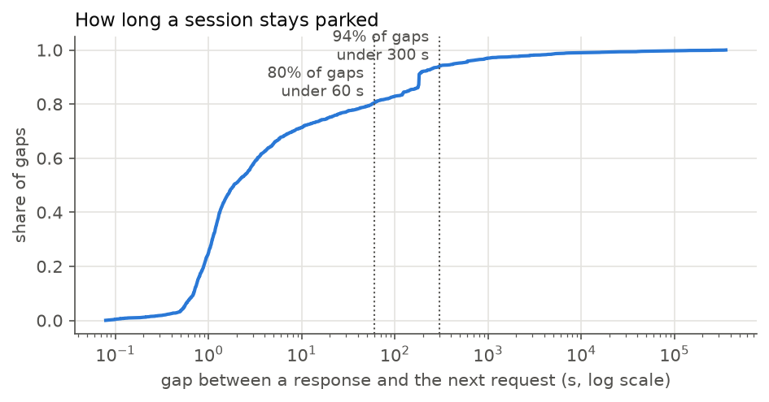
Most waits last a second or two, the time for a tool such as a file search. The tail is test suites and human pauses. AgentX treats a session as finished after 5 minutes of silence, which matches Anthropic’s default cache lifetime, so I cap waits at 300 s as well.
How many sessions are actually busy?
A session waiting on a tool is parked: it uses no compute, but its cache still occupies GPU memory. Little’s law (Little, 1961) gives the number of sessions in each state. If items arrive at rate \(\lambda\) and each stays for time \(W\), the average number in the system is
\[ L = \lambda \cdot W \]
For example, a shop that receives 60 customers an hour, each staying 30 minutes, holds 30 customers on average.
A session in our traffic lasts \(W \approx\) 26 minutes, so holding \(L = 32\) sessions requires \(\lambda \approx\) 75 new sessions per hour. Applying the same law to the busy part of each session only: a session is parked for 78% of its life, so on average
\[B_\text{active} \approx 32 \cdot (1 - 0.78) \approx 7\]
sessions are using the GPU at any instant, and the other 25 are parked, holding memory.
Takeaway: most of the GPU’s memory serves sessions that are not computing. The cost of a server for agents is dominated by what it has to remember, which leads to the question of what happens when it forgets.
R2: what forgetting costs
If a parked session’s cache is evicted, its next request is a prefill of the whole conversation. For a typical 74K-token context, that takes 7.1 s before the first new token. R2 requires under 1 s, so one forgotten session misses R2 by 7×. Because of the quadratic attention term, the longest sessions are the most expensive to lose.
Every parked session’s cache therefore has to stay in the pool, which raises the question of how many fit.
R1: how many sessions fit
The pool holds 471,816 tokens, and a typical session needs 74K of them, 10.9 GB. The GPU therefore holds 6.4 sessions, against the 348.2 GB that 32 would need: 5× short of R1.
Smaller numbers
Of the four factors in the bytes-per-token formula, the easiest to change is the last, bytes per number \(b\). The cache stores 16-bit floats (BF16), and two smaller formats are available:
- FP8, an 8-bit float: half the bytes, with a coarser grid of representable values.
- NVFP4, a 4-bit float: only 16 representable values, so each block of 16 numbers also stores one shared 8-bit scale that stretches those values to fit the block, for 4.5 bits per number.
Both lose precision; whether that changes the model’s output is the subject of R4 and is measured later. Here I only launched each to measure the room it buys.
| Cache number format | Tokens that fit | Sessions at 74K |
|---|---|---|
| BF16 (16 bits) | 471,816 | 6.4 |
| FP8 (8 bits) | 943,633 | 12.8 |
| NVFP4 (4 bits + scales) | 1,598,592 | 21.7 |
FP8 doubles the token count exactly. NVFP4 gives 3.39×, slightly under the \(16 / 4.5 = 3.56\)× the bit widths suggest. It also changed how SGLang divides the pool: the page size, the number of tokens per allocation block, went from 1 to 64. This matters later, when caches are reused at block granularity.
Even at 4 bits, Qwen3-8B holds about 22 sessions. Precision changes only one factor of the formula; the others, \(L_\text{attn} \cdot K \cdot H\), are fixed by the architecture.
A model with fewer attention layers
If the architecture is the limit, the direct remedy is a different architecture. GQA already reduced \(K\); the remaining factor is \(L_\text{attn}\), the number of layers that keep a cache. Qwen3.5-9B has 8 attention layers out of 32. The other 24 use Gated DeltaNet (Yang et al., 2025), which keeps no per-token cache.
Is it a fair swap?
A 9B model against an 8B one is not obviously a fair comparison, so I read every weight’s shape from the model files:
| Transformer layers | Token embedding | Output layer | Vision + extra prediction head | |
|---|---|---|---|---|
| Qwen3-8B | 6.95B | 0.62B | 0.62B | 0.00B |
| Qwen3.5-9B | 6.92B | 1.02B | 1.02B | 0.70B |
The transformer layers are the same size, 6.95B against 6.92B. The additional billion parameters are a larger vocabulary (248K tokens), a vision encoder and an extra prediction head, none of which affect the cache. Per token, the two models do nearly the same work. They differ in what they remember.
How a layer can work without a cache
The softmax in the attention formula is what requires keeping every key: the weight on token \(i\) depends on all the other scores, so nothing can be summed in advance. Replacing the softmax weight with the raw score \(q_t \cdot k_i\) gives
\[ o_t = \sum_{i \le t} (q_t \cdot k_i)\, v_i = \Big(\underbrace{\sum_{i \le t} v_i k_i^\top}_{\mathcal{S}_t}\Big)\, q_t \]
The sum in parentheses no longer depends on \(q_t\). It is a single \(H \times H\) matrix that can be maintained as a running total, \(\mathcal{S}_t = \mathcal{S}_{t-1} + v_t k_t^\top\), so a new token needs only \(\mathcal{S}_{t-1}\) and never the old keys and values. This is linear attention (Katharopoulos et al., 2020), and \(\mathcal{S}\) is its state.
Plain linear attention never forgets and blends all past tokens together, which costs quality. Gated DeltaNet adds two learned controls:
\[ \mathcal{S}_t = \underbrace{\alpha_t}_{\text{gate}}\, \mathcal{S}_{t-1}\Big(I - \underbrace{\beta_t}_{\text{write strength}} k_t k_t^\top\Big) + \beta_t\, v_t k_t^\top, \qquad o_t = \mathcal{S}_t\, q_t \]
- The gate \(\alpha_t \in (0,1)\) decays old contents, so the state can forget.
- The delta rule term \((I - \beta_t k_t k_t^\top)\) removes what the state currently stores under key \(k_t\) before writing the new value, so writes overwrite rather than accumulate.
In both cases, the state has the same size at 10 tokens and at 100K.
Its bytes
Only the 8 attention layers keep a per-token cache, with \(K = 4\) key/value heads of \(H = 256\):
\[ 2 \cdot 8 \cdot 4 \cdot 256 \cdot 2 = 32{,}768 \text{ bytes} = 32 \text{ KiB per token} \]
That is 4.5× less than Qwen3-8B. Each of the 24 DeltaNet layers adds a fixed-size state, \(\sigma\) per sequence: 32 heads, each a \(128 \times 128\) matrix of 4-byte floats, plus a 3-token window for a convolution applied before the state update:
\[\sigma = \underbrace{24 \cdot 32 \cdot 128 \cdot 128 \cdot 4}_{\text{states: } 48 \text{ MiB}} + \underbrace{24 \cdot 8192 \cdot 3 \cdot 2}_{\text{conv windows: } 1.1 \text{ MiB}} = 49.1 \text{ MiB per session}\]
In cache terms, \(\sigma\) costs as much as 1,572 tokens, small next to our context lengths.
The state has one structural cost. A cached key is valid only behind its exact prefix, but a prefix of the cache is still usable: the first 50K tokens of a conversation can be kept and the rest dropped. A state is a summary of every token before it, in order, so a sequence can resume only from a position where a snapshot of the state was saved. This constraint returns in later chapters.
The number came out wrong
On the napkin, Qwen3.5 fits 28 sessions at our context, close to the target, so I launched it.
The first launch failed: SGLang 0.5.23 rejects --language-model-only for this model, a flag I had passed to skip the vision encoder. The vision weights are therefore loaded and occupy a little under a gigabyte.
The second launch succeeded, with a different number.
14.6 sessions, not 28: 48% below the estimate. The server’s startup log shows where the memory went:
Load weight end. elapsed=34.92 s, type=Qwen3_5ForConditionalGeneration, avail mem=76.65 GB, mem usage=17.62 GB.
max_running_requests is capped to 122 by the mamba state cache (max_mamba_cache_size=614, 5 state slots per request). To raise it: increase --mamba-full-memory-ratio or --max-mamba-cache-size, or halve the state size with --mamba-ssm-dtype bfloat16.
Mamba Cache is allocated. max_mamba_cache_size: 614, conv_state size: 0.68GB, ssm_state size: 28.83GB
KV Cache is allocated. dtype: torch.bfloat16, #tokens: 1077354, K size: 16.44 GB, V size: 16.44 GB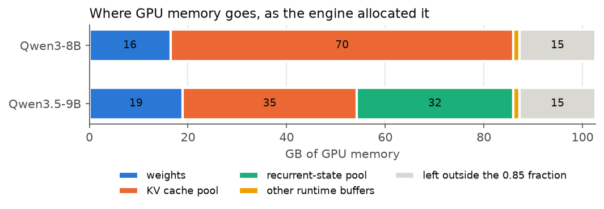
SGLang had divided the pool in two: 35.3 GB for the attention cache, and 31.7 GB for a separate pool of DeltaNet states with room for 614 of them.
Our 32 sessions need about 1.6 GB of state, so 614 slots needs explaining. Each running request takes 5 slots, its live state plus spare copies to update into, which by itself caps the server at 122 running requests. SGLang also keeps earlier snapshots so that a returning session can resume from one instead of rebuilding its state. The size of this pool comes from one default, --mamba-full-memory-ratio 0.9, which gives the state pool \(0.9 / 1.9 = 47\%\) of the budget.
That is more than our traffic needs, but how many snapshots it does need depends on how sessions return, which has not been measured yet. I left the default in place for now.
The capacity table for Qwen3.5, with the default split:
| Cache number format | Attention-cache tokens that fit | Sessions at 74K |
|---|---|---|
| BF16 | 1,077,354 | 14.6 |
| FP8 | 2,154,709 | 29.2 |
| NVFP4 | 3,134,080 | 42.5 |
The hybrid design also makes forgetting cheaper. Only 8 layers pay the quadratic attention cost, so prefilling 120K tokens takes 8.3 s instead of 16.9 s. My FLOP estimate for it is 14–18% optimistic, and the gap grows with length. The cause is known: I count the DeltaNet layers by their weights only and omit the state-update arithmetic.
R3: fast enough once it fits?
R3 concerns communication: how fast each sequence decodes once its cache is resident. For Qwen3.5 the decode formula needs one more term, because each step reads and writes back every sequence’s DeltaNet state, \(2\sigma\) per sequence:
\[ t_\text{step}(B, S) = \frac{B \cdot (S \cdot \text{KV bytes per token} + 2\sigma)}{W} + \max\left(\frac{2BP}{C}, \frac{2P}{W}\right) \]
\(2\sigma\) costs as much as reading 3,144 tokens of Qwen3.5’s cache, so it matters only for short conversations. Both models, measured as before:
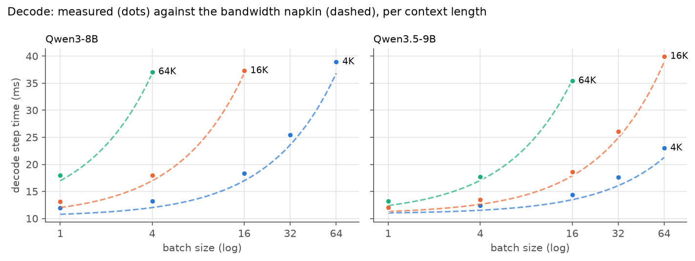
Qwen3.5 also lands within 11% of the formula. At 64K it decodes 16 sequences in the time Qwen3-8B decodes 4, since the cache read scales with bytes per token.
Each sequence receives one token per step, so its speed is \(1 / t_\text{step}\). With about 7 sessions active at once, at 74K tokens each:
Pop quiz: what speed does each user get on Qwen3-8B? (click for the answer)
The cache read is \(7 \times 74{,}000 \times 147{,}456 \approx 76\) GB. The weights are \(2P \approx 15\) GB. That is about 91 GB per step, and at 1.46 TB/s it takes 63 ms.
So each user gets about 16 tokens/s. R3 wants 30.
With an FP8 cache it is 27. With Qwen3.5 in BF16 it is 44.
Takeaway: for Qwen3-8B, R3 fails independently of R1. Even if all 32 sessions fit, the few active ones would read too much cache per step. The same bytes-per-token figure determines both limits, and on paper Qwen3.5 meets both.
Command: decode step time for Qwen3.5
The same decode script as before, against this server:
python -m sglang.launch_server --model-path Qwen/Qwen3.5-9B \
--context-length 131072 --mem-fraction-static 0.85 --enable-metrics --disable-radix-cacheThe first Qwen3.5 run died halfway through with ServerDisconnected. The server was fine. My HTTP client had reused a connection the server had already closed for being idle, and my harness shut the server down on the error. The fix was to open a fresh connection per request (TCPConnector(force_close=True)).
If not in GPU memory, then where?
Most of the 32 sessions are parked, and a parked session does not need its cache on the GPU; it needs it back by the time its tool returns. This machine has two larger, slower places to keep it, and I measured both:
| Where | Size | Measured speed | Time to bring back one Qwen3-8B token |
|---|---|---|---|
| GPU memory | 96 GB | 1,460 GB/s | (already there) |
| CPU memory (DRAM), over the PCIe 5.0 link | 176 GB | 57 GB/s | 2.6 μs |
| Disk | 1 TB | 1.7 GB/s | 87 μs |
The disk is a network-attached volume, the only “NVMe” device on this cloud VM. It delivered 1.7 GB/s with one stream or eight, 33× slower than the link to CPU memory. (The measurement used dd, which keeps few requests in flight; fio would give a fairer number.)
Moving a token’s cache back competes with recomputing it. Recomputing a token’s keys and values requires running it through every layer again, so the token at position \(S\) costs its share of prefill, the matmuls plus attention over the \(S\) tokens before it:
\[ t_\text{recompute}(S) \approx \frac{2P + 4 \cdot L_\text{attn} \cdot N \cdot H \cdot S}{C} \]
At \(S\) = 74K this is 154 μs per token. On raw bandwidth, CPU memory is faster than recomputation at every length, by about 59× at our context. The disk is faster only beyond 31K tokens. Whether latency and fixed costs erase those margins can only be measured on the server.
Command: disk bandwidth
dd if=/dev/zero of=f0 bs=1M count=8192 oflag=direct # write, bypassing the page cache
dd if=f0 of=/dev/null bs=1M iflag=direct # read; then the same with 8 parallel streamsWhere this leaves me
Everything so far is napkin math and microbenchmarks; no agent session has reached the server yet. The scoreboard at this point:
| Qwen3-8B | Qwen3.5-9B (default state pool) | |
|---|---|---|
| R1: sessions that fit at 74K, BF16 cache | 6.4 | 14.6 |
| R1: same, FP8 cache | 12.8 | 29.2 |
| R2: wait after a forgotten session at 74K | 7.1 s | 3.7 s (estimate, ~15% optimistic) |
| R3: tokens/s per user, 7 active at 74K | 16 | 44 |
The napkin is now trustworthy: prefill lands within 7% and decode within 11%, so a disagreement with a real run will be informative.
Three problems remain open:
- A forgotten session misses R2 several times over, so every parked session has to survive. Whether they do under real traffic has not been measured.
- Qwen3.5’s default state pool takes 47% of the memory, and our traffic needs a small fraction of that.
- Qwen3-8B fails R3 even if all sessions fit.
The next step is to turn on SGLang’s cache reuse, replay the real sessions, and observe what happens as more of them share the GPU.
Chapter 1: Keeping the cache between turns
Chapter 0 ended on R2. A session whose cache is forgotten pays a full prefill, 7.1 s for a typical one, so the cache has to outlive the request that built it. Until now it has not. Every measurement so far sent one request at a time, and the server threw that request’s keys and values away the moment its reply finished.
That is a waste for an agent, because an agent’s next request is mostly its last one. It is the same conversation, plus the reply the model just wrote, plus whatever the tool sent back.
Prefix caching
So the server can keep a request’s keys and values after it finishes. When the next request arrives, the server looks for the longest beginning of it that is already in the pool and prefills only what comes after. This is prefix caching. On the left of the figure is one agent: from the second turn on, almost the whole prompt is found in the cache, and only the new part is computed.
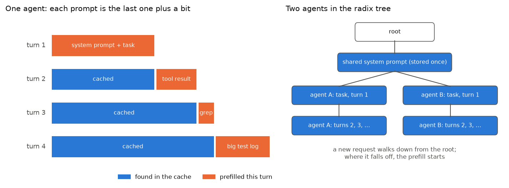
The word prefix matters. A key or value depends on every token before it and on its position (Chapter 0), so a cached entry is only valid behind exactly the same tokens, in the same order, from the very first one. Change one token near the start and everything after it is a different cache.
SGLang stores the cached prefixes in a radix tree, the right side of the figure. Each path down from the root spells out a token sequence, and sequences that start the same way share the same path for as long as they agree. A new request walks down the tree token by token. Where it falls off, the cached part ends and the prefill starts. Two agents with the same system prompt share one copy of it at the top.
The server’s log shows the walk for every request:
Prefill batch, #new-seq: 1, #new-token: 704, #cached-token: 44288, token usage: 0.15, #running-req: 3, #queue-req: 0
Prefill batch, #new-seq: 1, #new-token: 576, #cached-token: 44288, token usage: 0.15, #running-req: 3, #queue-req: 0
Prefill batch, #new-seq: 1, #new-token: 512, #cached-token: 44864, token usage: 0.15, #running-req: 3, #queue-req: 0Each of these turns brought 44K tokens of conversation, found them in the tree, and computed only the last few hundred. The share of a prompt found in the cache is the hit rate, and it is the number to watch for the rest of this post.
Prefix caching is on by default in SGLang. Every measurement in Chapter 0 ran with --disable-radix-cache, so this is the first time it is on.
What a hit still costs
A hit does not make a turn free. The new tokens still go through every layer, and in attention each of them looks back at every token before it, cached or not. With \(S_0\) tokens cached and \(T\) new ones, the new tokens form \(T \cdot S_0\) pairs with the cached ones and about \(T^2/2\) among themselves:
\[ \text{FLOPs}_\text{prefill}(T, S_0) = \underbrace{2PT}_{\text{matmuls}} + \underbrace{4 \cdot L_\text{attn} \cdot N \cdot H \cdot \left(T \cdot S_0 + \tfrac{T^2}{2}\right)}_{\text{attention}} \]
With \(S_0 = 0\) this is Chapter 0’s prefill formula. On Qwen3-8B, a 2,000-token tool result on a 60,000-token conversation costs 268 ms with a hit, against 5.4 s to prefill all 62,000 tokens. So a hit turns the cost of the whole conversation into the cost of what is new. What is new still has to attend to everything old.
A controlled run first
AgentX sessions all differ in length and timing, which makes a clean comparison hard. So for a first look I generated sessions shaped like the AgentX ones, with every size fitted to the traces:
| Piece of a session | Fitted to AgentX |
|---|---|
| System prompt and tool descriptions, identical in every session | 35,456 tokens |
| First user message | 8,857 tokens |
| New content per turn (tool result plus the next instruction) | median 831, p90 9,146 tokens |
| Reply per turn | median 345, p90 1,996 tokens |
The traces cannot say how much of a session’s opening is the shared system prompt and how much is the user’s message, so the 80/20 split above is a guess. The prompts are random token IDs. That is fine for timing and memory, and meaningless for anything the model writes. Eight sessions of 12 turns ran 4 at a time with no pause between turns, so the pool never came close to full.
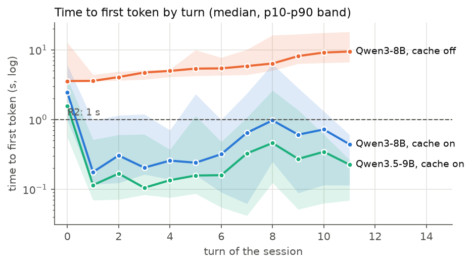
With the cache off, every turn prefills the whole conversation again, and the wait grows with it: 3.6 s on the first turn, 9.5 s by the last. With the cache on, the first turn pays its prefill once, and after that the median turn waits a few tenths of a second.
| Hit rate | Wait, later turns: p50 / p90 / p99 | Speed per user | |
|---|---|---|---|
| Qwen3-8B, cache off | 0.0% | 5.38 / 10.94 / 17.75 s | 24 tok/s |
| Qwen3-8B, cache on | 92.6% | 0.32 / 1.62 / 3.93 s | 38 tok/s |
| Qwen3.5-9B, cache on | 92.5% | 0.18 / 0.78 / 1.71 s | 64 tok/s |
The hit rate is as high as this traffic allows. The generator knows every token it sends, so it can predict the hit rate if every previously sent prefix were reused: 92.55%. The server’s own counters agree to the fourth digit.
The cache sped up decoding too, which I did not expect. With it off, each user got 24 tokens/s instead of 38. The server slots prefill work in between everyone’s decode steps, so every other session’s full re-prefill slows down everyone’s decoding.
R2 still fails
Look at the p90 for Qwen3-8B. With a 93% hit rate, one turn in ten still waits 1.6 s, and R2 wants under 1. That is with only 4 sessions, no tool waits and a near-perfect cache.
My first guess was queueing: a turn stuck behind another session’s big prefill. That was wrong. Only 1 of 82 later turns had another session’s big prefill running at the same time.
The slow turns were slow because of what they carried. The median later turn brings 1,984 new tokens, but the 90th percentile brings 11,072: a large file read or a long test log, arriving in one tool result. In the log, such a turn looks like this:
Prefill batch, #new-seq: 1, #new-token: 8192, #cached-token: 59136, token usage: 0.25, #running-req: 3, #queue-req: 0, #pending-token: 230459K tokens were found in the cache, and 10.5K were new. The server prefills at most 8,192 tokens per step (its chunk size), so this turn takes two steps, and the 2,304 still pending go in the second. Every one of those new tokens attends to the whole 59K conversation. By the formula, an 11,000-token tool result on a 60,000-token conversation costs 1.6 s, all of it real work.
So I checked the formula against every request with the cache on:
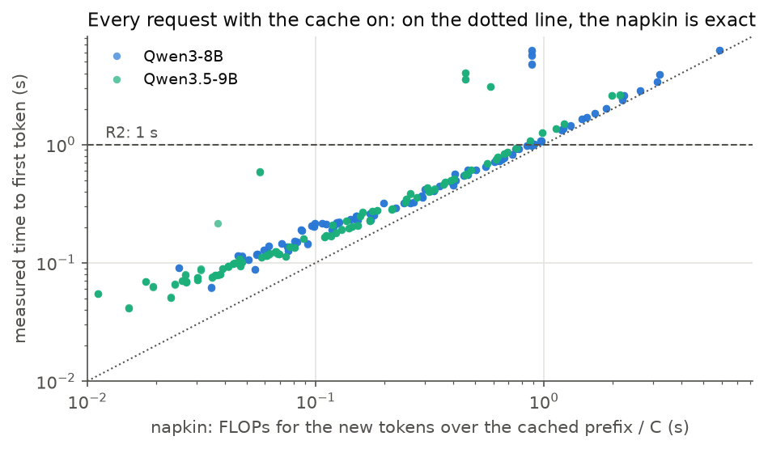
Wherever the formula predicts more than half a second, Qwen3-8B lands at 1.08–1.23× of it. Qwen3.5 lands at 1.22–1.31×, a bit higher for the same reason as in Chapter 0: the formula ignores the DeltaNet state math. Below half a second a fixed overhead of a few tens of milliseconds shows up. So the slow turns are not a cache problem. With a perfect cache, a turn still costs whatever its new tokens cost, and the attention term makes new tokens more expensive the longer the conversation gets.
That is also why Qwen3.5 passes, with a p90 of 0.78 s. Only 8 of its layers pay the \(T \cdot S_0\) term. Fewer attention layers made its cache smaller in Chapter 0, and here they make its new tokens cheaper too.
Two more things in Figure 14 were worth chasing.
A cached token is not always a saved second. The 9 Qwen3-8B points far above the line are all first turns. The four sessions in a run start at the same moment. One of them computes the shared system prompt, and the other three wait for it, then report those 35,456 tokens as cached. The server is right that they were reused, but they took 4.8–6.2 s anyway, because somebody else had to finish building them first.
Qwen3.5 reused only 32,768 tokens of the 35,456-token shared prompt. 32,768 is exactly 4 × 8,192, the chunk size from the log above. A DeltaNet layer can only resume from a saved state (Chapter 0), and SGLang saves one where a chunk or a request ends. So the last 2,688 tokens of the shared prompt were recomputed for every session. This is the bite Chapter 0 warned about, arriving early. Here it cost Qwen3.5 a sliver of hit rate.
Command: cache on and off, and replaying a session
The server is the Chapter 0 one; prefix caching is on unless you pass --disable-radix-cache. A session is a list of prompts where each one extends the last. cached_tokens in the response says how much of the prompt the server found in its tree:
import json, random, time, requests
random.seed(0)
block = lambda: [random.randrange(1000, 150_000) for _ in range(64)]
system = [t for _ in range(35_456 // 64) for t in block()] # shared by every session
def turn(ids, n_out):
body = {"input_ids": ids, "stream": True,
"sampling_params": {"max_new_tokens": n_out, "temperature": 0, "ignore_eos": True}}
start, ttft = time.perf_counter(), None
with requests.post("http://localhost:30000/generate", json=body, stream=True) as r:
for line in r.iter_lines():
if line.startswith(b"data:") and b"[DONE]" not in line:
ttft = ttft or time.perf_counter() - start
meta = json.loads(line[5:])["meta_info"]
return ttft, meta["cached_tokens"], meta["prompt_tokens"]
history = [t for _ in range(8_857 // 64) for t in block()] # first user message
for i in range(12):
print(turn(system + history, 340))
history += [t for _ in range(random.randint(2, 30)) for t in block()] # the reply and the next tool resultThe runs in this chapter used the generator fitted above: 8 sessions × 12 turns, 4 at a time, three runs per configuration.
One token near the top
Every session so far only ever appended. That is the shape prefix caching rewards, and the rule from above says why: change one token near the start, and everything after it is a different cache. Real harnesses change tokens near the start all the time, usually without meaning to. Three habits are common:
- A clock in the system prompt. “The current time is 18:02” at the very top, rendered fresh on every turn.
- Tools in a different order. The harness builds the tool descriptions from a dictionary, or from whichever tool server answered first, so their order changes between turns.
- Dropping old replies. Qwen3’s own chat template removes the thinking from earlier assistant turns, so a reply looks different the turn after it was written. I simulated the harsher version: each reply stays in the history for one turn, then disappears.
Here is where each habit cuts the prompt:
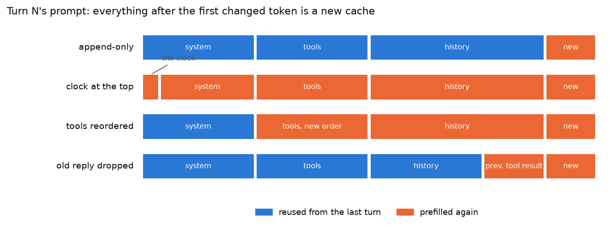
A clock costs everything after it, which is everything. The log of the clock run shows the same 40K-token conversation being prefilled from scratch, one 8,192-token chunk after another, with nothing found in the tree:
Prefill batch, #new-seq: 1, #new-token: 8192, #cached-token: 0, token usage: 0.56, #running-req: 3, #queue-req: 0, #pending-token: 40384
Prefill batch, #new-seq: 1, #new-token: 8192, #cached-token: 0, token usage: 0.58, #running-req: 3, #queue-req: 0, #pending-token: 32192I added each habit to the generator as a switch, ran the same 8 sessions × 12 turns once per habit, and had the generator predict the hit rate from the tokens it sent:
| Habit | Predicted hit rate | Qwen3-8B: hit rate · wait p50 / p90 | Qwen3.5-9B: same |
|---|---|---|---|
| append-only | 92.6% | 92.6% · 0.32 / 1.62 s | 92.5% · 0.18 / 0.78 s |
| clock at the top | 0.0% | 0.0% · 5.38 / 10.95 s | 0.0% · 3.31 / 5.91 s |
| tools reordered | 27.7% | 27.7% · 4.36 / 9.40 s | 27.6% · 2.48 / 5.09 s |
| old reply dropped | 87.6% | 87.6% · 0.58 / 2.88 s | 84.6% · 0.46 / 1.65 s |
| all three | 0.0% | 0.0% · 4.87 / 10.55 s | 0.0% · 3.05 / 5.74 s |
The clock costs all of it. Not even the 35,456-token system prompt that every session shares survives, because the clock sits above it. The waits match the cache-off run to two digits. The cache still did all its work: on Qwen3-8B it stored 5.3 M tokens and later evicted them, and none were ever reused.
Reordering the tools keeps 28%, the part of the system prompt above the tools. Everything after the first moved tool is new on every turn, so a typical turn waits 4.4 s instead of 0.32 s.
Dropping old replies hides in the hit rate (87.6% against 92.6%) and shows in the tail. The cut lands just before the previous tool result, so every turn prefills that tool result again as well as its own. Qwen3-8B’s p90 goes from 1.62 s to 2.88 s. A hit rate averages over tokens; the tail is set by the big turns, and those now pay twice.
That row is also the only one where a measured hit rate missed the prediction. Qwen3.5 reused 84.6%, not 87.6%. Turn by turn against Qwen3-8B, 65 of 82 turns reused less, on average 2,427 tokens less. Here the cut lands in the middle of a cached conversation. Qwen3-8B can resume from any token, because every token’s keys and values are stored. Qwen3.5 can only resume from a saved DeltaNet state, and the nearest one before the cut is usually where an earlier turn ended. It is the same bite as the shared prompt above: an append-only session never pays it, and any edit in the middle does.
So, for whoever writes the harness: keep the prompt append-only. Dates go at the end or nowhere, tools get a fixed order, and old turns stay as they were sent.
Command: checking whether a prompt edit breaks the cache
Send the same long prompt twice and read cached_tokens from the second response. Then change one token and see what is left:
import random, requests
def cached(ids):
body = {"input_ids": ids, "sampling_params": {"max_new_tokens": 1, "temperature": 0}}
return requests.post("http://localhost:30000/generate", json=body).json()["meta_info"]["cached_tokens"]
random.seed(0)
prompt = [random.randrange(1000, 150_000) for _ in range(40_000)]
cached(prompt)
print(cached(prompt)) # ~40,000: the whole prompt was reused
print(cached([prompt[0] + 1] + prompt[1:])) # 0: a changed first token, like a clock at the top
mid = prompt[:20_000] + prompt[20_000:][::-1]
print(cached(mid)) # ~20,000: everything up to the first changed tokenOn a hybrid model like Qwen3.5, the last line can come back lower than 20,000: it stops at the last point before the edit where a DeltaNet state was saved.
Where this leaves me
| 4 sessions, no tool waits, cache on | Qwen3-8B | Qwen3.5-9B |
|---|---|---|
| R2: wait on later turns, p90 (target < 1 s) | 1.62 s | 0.78 s |
| R3: tokens/s per user (target ≥ 30) | 38 | 64 |
Prefix caching does its job. It reuses everything the traffic allows, and a typical turn waits a few tenths of a second instead of several seconds. What it cannot do is make new tokens free: on Qwen3-8B, big tool results alone push the p90 past R2. And it only works while the harness keeps the prompt append-only.
This was the easy case, though. Four sessions, no waiting, and a pool big enough that nothing anyone needed was evicted. Real agents wait on tools while their caches sit in the pool, and R1 wants 32 of them. So the next question is what happens when the pool fills up.
Chapter 2: When the pool fills up
Chapter 1 had four agents and no tool waits, so the pool never filled. Real agents are not like that. Each one spends most of its life parked on a tool call (Chapter 0), and while it is parked its cache sits in the pool, waiting for the next turn. Add enough agents and the pool runs out.
When it does, the server has to evict: throw away some cached tokens to make room. Whatever it throws away belongs to some parked agent, and that agent’s next turn pays a prefill for everything it lost. Chapter 0 priced that at seconds per session. So this chapter adds agents until the pool fills, and watches what eviction does to the hit rate and the wait.
How many should fit
Every agent the server is serving holds its whole context in the pool, whether it is running or parked. So the pool runs out when
\[ \text{sessions} \times \text{context per session} > \text{pool} \]
The context to use is what a session holds on average over time, the same typical context Chapter 0 computed: each request’s context counts for as long as it sits in memory, while it runs and during the tool wait after it.
Shared tokens change the sum. The synthetic sessions all start with the same 35,456-token system prompt, and the radix tree stores it once (Figure 12). So for them the pool holds one shared prompt plus each session’s private part:
\[ \text{sessions}_\text{max} = \frac{\text{pool} - \text{shared}}{\text{context} - \text{shared}} \]
AgentX sessions share nothing with each other (Chapter 0), so for them it is just pool over context.
| Context held per session | Qwen3-8B: sessions that fit | Qwen3.5-9B: same | |
|---|---|---|---|
| synthetic | 68.6K, 35K of it shared | 13.2 | 31.4 |
| AgentX | 71.6K, none shared | 6.6 | 15.0 |
R1 wants 32. On paper, neither model gets close.
Adding agents until it breaks
To test it, the load generator keeps a fixed number of agents alive. Each one runs a session turn by turn, waits out each tool call, and when its session ends, a new one takes its place. So the server always has exactly that many agents, some parked on a tool and some waiting for the GPU. Two kinds of traffic ran: the synthetic generator from Chapter 1 (two seeds), and the 83 AgentX sessions replayed with their real request sizes and tool waits.
How the sweep was set up, and what it means for reading the numbers
- Tool waits are capped at 60 s, not 300. That way an 8-minute point sees many turns. The cap barely changes how much a session holds: 72.9K at 60 s against 73.8K at 300 s, because a parked session holds the same context however long it is parked.
- Synthetic sessions run to a real length. They do not stop after 12 turns; each keeps going until it reaches a final length drawn from the AgentX sessions, so the mix of short and long sessions matches the real one.
- Sessions start part-way through. If all of them started at turn 0, the first minutes would be all short contexts. So each agent’s first session starts at a random turn, and the server sees the mix of young and old sessions it would see in steady state. Each of those first requests has nothing cached, which is part of why the p90 sits above 1 s even with one agent.
- A point lasts 8 minutes, and the first 2 are dropped. Requests still waiting 2 minutes after the end are cut off and counted with the wait so far, so past the cliff the waits are lower bounds.
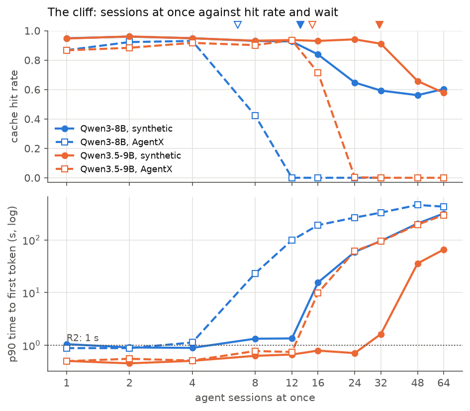
| Napkin | Last point before the cliff (hit rate) | First point past it (hit rate) | |
|---|---|---|---|
| Qwen3-8B, synthetic | 13.2 | 12 (93%) | 16 (84%) |
| Qwen3-8B, AgentX | 6.6 | 4 (93%) | 8 (42%) |
| Qwen3.5-9B, synthetic | 31.4 | 32 (91%) | 48 (66%) |
| Qwen3.5-9B, AgentX | 15.0 | 12 (94%) | 16 (72%) |
Every cliff landed where the napkin put it, to within one sweep point, four times out of four. Pool divided by context was right. The closest call is Qwen3.5 on synthetic traffic: the napkin says 31.4, and at 32 agents the hit rate still holds, but the p90 wait has already crossed a second.
And it is a cliff, not a slope. On Qwen3-8B with AgentX traffic, 4 agents get a 93% hit rate and a p90 of 1.1 s. 12 agents get 0%, and a median wait of 86 s. Two things broke at once there, and each has its own explanation.
Why the hit rate goes to zero
On AgentX traffic, past the cliff the hit rate is not low. It is zero: not one cached token was reused.
The culprit is how SGLang chooses what to evict. By default it throws out the least recently used (LRU) cache, the one nobody has touched for the longest. That is a good rule for most caches. It is the worst possible rule for agents, because agents come back in a loop: each one runs a turn, parks, and returns after the others have had theirs. Here is a toy version, five agents taking turns and a pool with room for four:
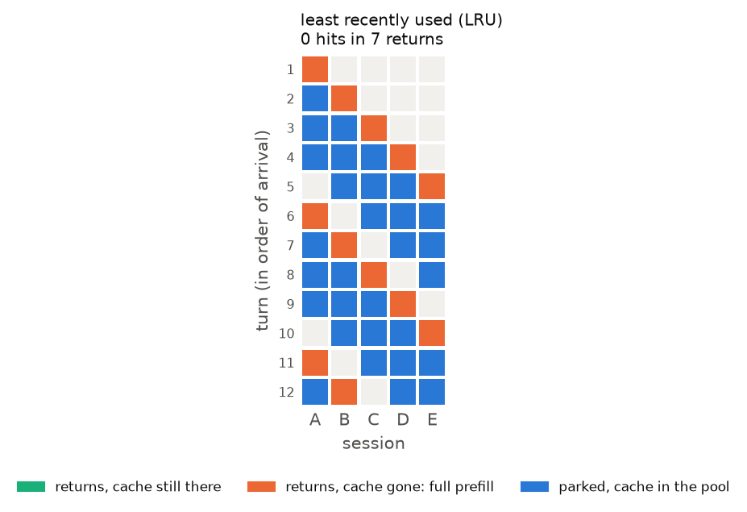
On turn 5, agent E arrives and the pool is full, so LRU evicts the cache that has gone longest untouched: A’s. A is the very next agent to return. A’s turn misses, rebuilds its whole cache, and to make room LRU evicts B, the next to return. And so on, forever. Once the loop is bigger than the pool, every single return misses. Real agents do not return in a perfect cycle, but at the cliff they are close enough.
Synthetic traffic does not go to zero. Past the cliff on Qwen3-8B it settles at 59%, and the toy explains that too. The requests there average 60K tokens of prompt, and 35,456 of those, 59%, are the shared system prompt. Of 223 requests, 0 reused even one token past it. The shared prompt is touched by every turn of every agent, so it is always the most recently used entry, and LRU never evicts it. Everything private is lost.
I checked that directly, because if the shared prompt were evicted, every agent would lose 35K tokens at once. SGLang has no way to pin a prefix in the pool, but its priority eviction policy evicts low-priority entries first. So I sent the shared prompt once at high priority and pushed 48 synthetic agents through both policies:
| Eviction policy | Requests that missed the shared prompt | Hit rate | |
|---|---|---|---|
| Qwen3-8B | lru | 0.0% | 62% |
| Qwen3-8B | priority | 0.0% | 62% |
| Qwen3.5-9B | lru | 0.0% | 64% |
| Qwen3.5-9B | priority | 0.0% | 64% |
Pinning changed nothing, because nothing needed pinning. LRU already protects the shared prompt. What it cannot protect is each agent’s own conversation.
Why the wait jumps to minutes
Past the cliff every request rebuilds its whole context, 7.5 s each on Qwen3-8B. So my first guess was compute: the GPU is drowning in prefill.
It is not. The server’s log, at 24 agents on Qwen3-8B:
Decode batch, #running-req: 18, #token: 460834, token usage: 0.98, cuda graph: True, gen throughput (token/s): 10.47, #queue-req: 6
Decode batch, #running-req: 19, #token: 456323, token usage: 0.97, cuda graph: True, gen throughput (token/s): 79.82, #queue-req: 5
Decode batch, #running-req: 18, #token: 438084, token usage: 0.93, cuda graph: True, gen throughput (token/s): 273.56, #queue-req: 5token usage is the share of the pool in use, and it is pinned near 100%. #queue-req counts requests that have arrived but not started. SGLang starts a request only when its whole context fits in the pool, so a request that arrives while the pool is full of other requests’ contexts waits in that queue. It is waiting for memory, not for compute.
How long it waits follows from Little’s law, the same one Chapter 0 used to count parked sessions. A running request holds its memory for a time \(T_\text{life}\): the rebuild, then decoding its reply. So running requests free up their memory at a rate of \(N_\text{running} / T_\text{life}\), and a queue of \(N_\text{queued}\) drains in
\[ W_\text{queue} = \frac{N_\text{queued}}{N_\text{running}} \cdot T_\text{life} \]
The server’s counters give every term:
| Model, traffic, agents | Running | Queued | A request’s life once started | Little’s law | Measured median wait |
|---|---|---|---|---|---|
| Qwen3-8B, AgentX, 12 | 5.1 | 6.0 | 59 s | 70 s | 86 s |
| Qwen3-8B, AgentX, 24 | 5.2 | 18.3 | 68 s | 239 s | 238 s |
| Qwen3-8B, synthetic, 24 | 14.7 | 5.9 | 79 s | 32 s | 41 s |
| Qwen3.5-9B, AgentX, 32 | 14.2 | 15.4 | 70 s | 75 s | 80 s |
| Qwen3.5-9B, AgentX, 48 | 14.2 | 32.2 | 68 s | 153 s | 182 s |
It lands within about 20% of the measured median on every row. At 24 AgentX agents it predicts 239 s and the server measured 238 s. Where it misses, it comes out low, and I think I know why: I estimate \(T_\text{life}\) from the requests that finished inside the window, and the longest ones did not.
Most of a request’s life is not even the rebuild. It is the decode: 61 s to write a reply of a few hundred tokens, because with the pool full of 70K-token contexts, every decode step reads all of them (Chapter 0’s R3 problem). Look at the first log line: 18 requests running and the whole server generating 10 tokens per second.
So the cliff is one mechanism with two faces. The pool fills, LRU evicts exactly the agents about to return, every request rebuilds, and every rebuilt request holds its full context for a minute while it decodes. Memory, not compute, sets the pace.
Command: a sweep over the number of agents, and the server’s counters
--enable-metrics exposes the scheduler’s counters on /metrics. The ones used here are sglang:num_running_reqs, sglang:num_queue_reqs, sglang:token_usage and the evicted-token counter. This keeps N agents alive:
import asyncio, random, time, aiohttp
URL = "http://localhost:30000"
async def turn(http, ids, n_out):
body = {"input_ids": ids, "stream": True,
"sampling_params": {"max_new_tokens": n_out, "temperature": 0, "ignore_eos": True}}
start = time.perf_counter()
async with http.post(URL + "/generate", json=body) as r:
async for line in r.content:
if line.startswith(b"data:"):
return time.perf_counter() - start # time to first token; the reply keeps streaming server-side
async def agent(http, system, stop_at, waits):
while time.perf_counter() < stop_at: # one session after another
ctx = system + [random.randrange(1000, 150_000) for _ in range(9_000)]
while len(ctx) < 120_000 and time.perf_counter() < stop_at:
waits.append(await turn(http, ctx, 300))
ctx += [random.randrange(1000, 150_000) for _ in range(random.randint(500, 8_000))]
await asyncio.sleep(random.expovariate(1 / 5)) # the tool runs
async def sweep(n, seconds=480):
system = [random.randrange(1000, 150_000) for _ in range(35_456)]
waits = []
async with aiohttp.ClientSession(connector=aiohttp.TCPConnector(force_close=True)) as http:
await asyncio.gather(*(agent(http, system, time.perf_counter() + seconds, waits) for _ in range(n)))
return sorted(waits)[int(0.9 * len(waits))]
for n in (4, 8, 12, 16):
print(n, asyncio.run(sweep(n)))Run curl -s localhost:30000/metrics | grep -E "num_running_reqs|num_queue_reqs|token_usage" alongside it. Past the cliff, running stops growing and queued takes over.
Does a slower tool make it worse?
Before any of this, I assumed tool latency would be the knob. A slow tool keeps an agent parked longer, and parked agents are what fill the pool. So I reran the synthetic sweep on Qwen3-8B with tool waits capped at 2, 10 and 30 s instead of 60, at three points: below the cliff, past it, and well past it.
| Tool wait capped at | 12 agents: hit rate · median wait | 24 agents | 48 agents |
|---|---|---|---|
| 2 s | 94% · 0.4 s | 57% · 55 s | 54% · 252 s |
| 10 s | 94% · 0.4 s | 57% · 54 s | 51% · 242 s |
| 30 s | 94% · 0.4 s | 56% · 53 s | 52% · 240 s |
| 60 s | 94% · 0.3 s | 60% · 41 s | 52% · 229 s |
The cliff did not move. At 12 agents every cap gets the same hit rate and the same sub-second wait. At 48 every cap sits on the shared-prompt floor with a wait of minutes.
In hindsight the napkin said so. Every agent holds its whole context the entire time, busy or parked, so the pool fills at the same number of agents however long the tools take. A 60 s tool does not make an agent any bigger than a 2 s one. (That is also why the 60 s cap was safe to use.)
Just past the cliff, at 24 agents, only the queue moves a little: from 8.1 requests to 5.9 as tools get slower, because with slow tools fewer agents want the GPU at the same moment. That is smaller than the noise between seeds, though: the other seed at a 60 s cap got a 70% hit rate and a 20 s wait.
Tool latency still matters to an operator, just not here. It decides how many sessions are alive at once. By Little’s law, sessions alive = sessions started per second × how long each lasts, and slow tools make sessions last longer. So slow tools push a server toward the cliff by putting more agents on it, not by making each one heavier.
Does the page size matter?
Chapter 0 left a note: switching the cache to NVFP4 quietly changed SGLang’s page size from 1 token to 64. The pool is handed out in pages, so a page is the smallest piece of cache that can belong to a request. The radix tree also matches whole pages. Before shrinking anything, I wanted to know whether bigger pages cost something on their own.
They can cost in two ways. A hit can only stop at a page boundary, so even a perfect hit recomputes the partly matched last page, half a page on average. And each request’s last page is only partly filled, which wastes up to a page of slots. At 128 tokens per page against an 69K context, both come to about one token in a thousand. So the napkin says page size should not matter for agents.
I reran one point just past the cliff, 24 synthetic agents on Qwen3-8B, where the pool is full and evicting, at page sizes 1, 16, 64 and 128. For each, I also timed a decode step at 16K context:
| Page size | Pool, tokens | Hit rate | Wait p50 / p90 | Decode step, batch 1 / 4 / 16 |
|---|---|---|---|---|
| 1 | 471,816 | 59% | 42 / 67 s | 13.1 / 18.0 / 37.3 ms |
| 16 | 471,808 | 59% | 41 / 66 s | 13.1 / 18.0 / 37.3 ms |
| 64 | 471,808 | 59% | 40 / 65 s | 13.1 / 18.0 / 37.3 ms |
| 128 | 471,808 | 59% | 40 / 65 s | 13.1 / 18.0 / 37.3 ms |
Nothing moved. The hit rate stays within two points of 60%, the same seed’s result in the main sweep. The decode step is the same to a tenth of a millisecond: the attention kernel finds keys and values through a table of page addresses either way, and the bytes it reads do not depend on how they are grouped.
This is the friendly case, though. My synthetic prompts are built from 64-token blocks, so pages up to 64 never cut a block in half. Real text does not line up like that, but the loss is bounded at one page per request, and against an agent’s context that is noise. Page size matters for short chat requests, where half a 128-token page can be a tenth of the prompt. For agents, NVFP4’s switch to 64 costs nothing.
Giving the state pool’s memory back
Chapter 0 also parked a question about Qwen3.5. By default SGLang hands 31.7 GB to the pool of DeltaNet states, room for 614 of them, and how many we need depended on how sessions come back. Now they are coming back.
At the cliff, that pool was mostly empty. At 48 agents with the default split, the token pool was 94% full and the state pool 21% full. Agents were losing their caches for lack of token space while 25 GB of state slots sat idle. One state slot costs as much memory as 1,572 cached tokens, so every slot handed back keeps another 1.6K tokens of somebody’s conversation.
The flag is --max-mamba-cache-size. At startup the server prints the new split, for 256 slots:
max_running_requests is capped to 51 by the mamba state cache (max_mamba_cache_size=256, 5 state slots per request).
Mamba Cache is allocated. max_mamba_cache_size: 256, conv_state size: 0.28GB, ssm_state size: 12.05GB
KV Cache is allocated. dtype: torch.bfloat16, #tokens: 1640130, K size: 25.03 GB, V size: 25.03 GBI tried 256, 128 and 64 slots, at 24, 48 and 64 synthetic agents: half the default’s cliff, the cliff itself, and past it.
| State slots | Token pool | Sessions on the napkin | Running cap (slots / 5) | Hit rate at 24 / 48 / 64 agents | Median wait at 48 |
|---|---|---|---|---|---|
| 614 (default) | 1.08 M | 31 | 122 | 94% / 54% / 54% | 33.6 s |
| 256 | 1.64 M | 48 | 51 | 93% / 79% / 56% | 1.3 s |
| 128 | 1.84 M | 54 | 25 | 84% / 53% / 54% | 54.9 s |
| 64 | 1.94 M | 58 | 12 | 60% / 53% / 54% | 112.1 s |
At 256 slots, 48 agents went from past the cliff to below it: hit rate 54% → 79%, median wait 34 s → 1.3 s. The token pool grew by half, and the napkin cliff moved from about 31 agents to about 48. Nothing about the model changed, only the split.
Going further breaks it from the other side, in two ways.
- Running requests run out of slots. Each running request takes 5 state slots, so the state pool caps how many can run at once. At 64 slots the cap is 12, and even 24 agents queue, with the token pool only 75% full.
- Parked agents lose their snapshots. A parked agent can only resume from a saved state, and each saved state takes a slot. At 128 slots and 48 agents, 24 requests run, which is the cap. They need 5 × 24 = 120 slots, and the 24 parked agents need one each: 144 in all, more than the pool has. So parked agents lose their snapshot and come back to a miss, even though their tokens are still in the pool. The hit rate fell to 53% with the token pool only 78% full.
One cell does not fit that count. At 128 slots even 24 agents lose some hits: 84% against 94% with the default split. By the count above they need only 5 × 16 + 8 = 88 slots, and the server reported the state pool 51% full on average. I have not found what takes the rest. A burst that briefly needs more slots than the average would do it, but I have not checked.
So Qwen3.5 has two pools, and the right split makes them run out together. The state pool needs five slots per running request plus one per parked agent, with some headroom, and the rest belongs to tokens. For this traffic that is 256 slots, not 614, and from here on every Qwen3.5 run uses 256. Only synthetic traffic was swept; for AgentX the same napkin with a 1.64 M-token pool gives 23 agents, up from 15, not yet measured.
Where this leaves me
| AgentX traffic, last point before the cliff | Qwen3-8B | Qwen3.5-9B |
|---|---|---|
| R1: agents served (target 32) | 4 | 12 |
| R2: wait on later turns, p90 (target < 1 s) | 1.13 s | 0.75 s |
| R3: tokens/s per user (target ≥ 30) | 31 | 38 |
The napkin was right, and that is the bad news: one GPU holds a handful of agents, not 32. Past that the server does not slow down gracefully. It falls off a cliff, because LRU evicts exactly the agents that are about to come back.
That leaves three ways out. Choose better who stays, so an overloaded pool thrashes less. Make each agent’s cache smaller. Or put the caches that do not fit somewhere bigger than GPU memory. The first is the cheapest to try, since it is a flag.
Chapter 3: Choosing who stays
In the toy loop of Figure 17, LRU evicted exactly the agent that was about to come back. If that is the problem, a better choice of what to evict should fix it, or at least soften the cliff. Before trying anything, it helps to know how good the best possible choice is.
The best possible choice
There is a textbook answer. If you knew the future, the best cache to evict would be the one whose next use is furthest away. This is Belady’s rule (Belady, 1966), and no policy can beat it.
In a loop, the agent whose next turn is furthest away is the one that just parked, because everyone else comes back before it does. That is the opposite of LRU. Same toy, same pool:
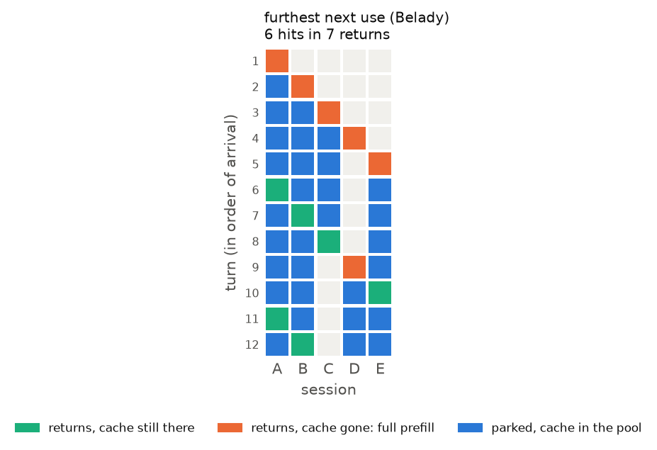
It keeps a fixed set of agents warm instead of none. With a pool that holds \(P\) agents’ caches and \(N\) agents in the loop, about \((P-1)/(N-1)\) of the returns hit, so the cliff becomes a slope:
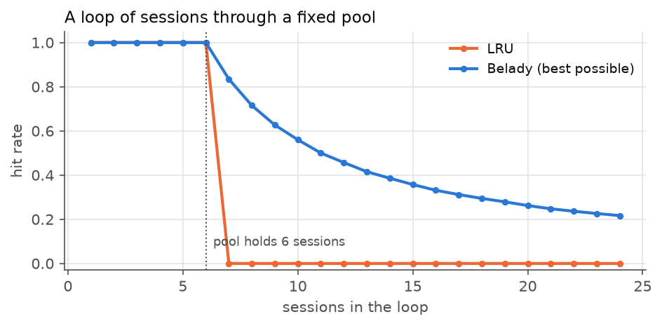
That is the most a smarter eviction policy could buy, and it is a lot. In a loop, Belady’s rule is simple to state: evict the most recently used (MRU) cache. SGLang has an MRU policy in its source, but version 0.5.23 does not accept it on the command line. It does accept LRU, LFU, SLRU, T-LRU and priority. So the question is whether any of those gets closer to the blue line than LRU does.
Three policies against LRU
- LFU, least frequently used, evicts the cache used the fewest times.
- SLRU, segmented LRU, splits the pool in two. A cache used once lives in a probation segment, one used again moves to a protected segment, and probation is evicted first.
- T-LRU is the one built for agents. Zhang et al. (arXiv:2510.15152) observe that a returning session does not need its whole context cached to meet a latency budget; it can afford to rebuild a short tail. So T-LRU first trims the tail of every parked session, as many tokens as can be rebuilt within the budget, and only then evicts whole sessions in LRU order.
T-LRU needs two numbers. threshold is how many new tokens fit in the budget, and next_prompt_estimate is how many a turn adds anyway; the tail it may drop is the difference. From the prefill formula, at the 350 TFLOP/s Chapter 0 measured and on top of a 69K cached context, 6,233 new tokens fit in a 1 s budget. A synthetic turn adds 3,270 on average. So T-LRU may drop the last 2,963 tokens of each session.
Each ran on Qwen3-8B with synthetic traffic, at the three points Chapter 2 used for tool waits: below the cliff, past it, and well past it.
| Eviction policy | 12 agents: hit rate · median wait | 24 agents | 48 agents |
|---|---|---|---|
| LRU (default) | 94% · 0.3 s | 60% · 41 s | 52% · 229 s |
| LFU | 91% · 0.5 s | 61% · 38 s | 51% · 229 s |
| SLRU | 93% · 0.4 s | 61% · 38 s | 52% · 229 s |
| T-LRU | 94% · 0.4 s | 59% · 42 s | 52% · 229 s |
| LRU, the other seed | 92% · 0.4 s | 70% · 20 s | 60% · 141 s |
None of them moved the cliff. Every policy lands within three points of LRU, and LRU with the other seed moves more than that: 70% against 60% at 24 agents.
Each one fails for a reason the toy loop can see.
- LFU counts uses, and in a loop every agent’s cache is used at the same rate, once per turn. The counts do not say who is next.
- SLRU protects what has been used twice. After one return, every agent’s cache has been used twice, so everything is protected, and inside the protected segment it is LRU again.
- T-LRU trims tails, and the tails are too small. At 24 agents the contexts want 831K tokens of a 472K pool, 359K too many. Trimming 2,963 tokens off each of 24 agents frees 71K. The rest still has to come from whole sessions, chosen by LRU.
All three look only at the past: how recently, how often. Belady needs the future. And the one part of the system that knows the future is not the server. It is the agent.
Telling the server when the agent comes back
When an agent makes a tool call, its harness knows another turn is coming as soon as the tool returns, and often roughly how long that takes. SGLang has two ways to pass that on.
- Sessions.
/open_sessionopens a session with a timeout. With--enable-session-radix-cache, the server evicts cache that no open session references before cache that one does. An agent opens a session, sends each turn inside it, and closes it when the task ends. - Priorities. With
--radix-eviction-policy priority, each request carries a priority, and the lowest priority is evicted first. The harness can send priority 1 when the tool will come back soon and 0 when it will not. My replay knows every wait in advance, which a real harness can only estimate.
The session timeout hides a trap, so I tested it on its own first. I opened a session with a 5 s timeout, sent a 20,000-token turn, and sent the next one either 1 s or 10 s later:
next turn after 1 s: HTTP 200, cached_tokens 20,000 of 24,000
next turn after 10 s: HTTP 400, Invalid request: session id diag-after-ttl-381a780d does not existThat much is documented. What is not is when the clock starts. SGLang times a session from its last request’s arrival, not from when that request finished. So a request that sits in the queue, or decodes, for longer than the timeout loses its session while it is still running. In the replay, the agent’s next turn then came back as HTTP 200 with a single token and finish_reason: abort. My first run counted those as successful turns, and sessions looked like a big win. They were one-token aborts. The fixed harness treats an abort the way a real agent would have to: open a new session, resend the whole prompt, and charge the lost round trip to that turn’s wait.
These ran at 24 agents with real tool waits, capped at 300 s instead of Chapter 2’s 60, because the gaps are the whole point here:
| Retention | Synthetic: hit rate · wait p50 / p90 | AgentX: hit rate · median wait | Turns resent after an expired session |
|---|---|---|---|
| LRU | 84.5% · 0.83 / 7.9 s | 0% · 211 s | – |
| Priority: high if back within 10 s | 84.2% · 1.08 / 7.7 s | 0% · 211 s | – |
| Priority: high if back within 60 s | 85.7% · 0.68 / 7.0 s | 0% · 211 s | – |
| Session, 30 s timeout | 85.1% · 0.77 / 4.7 s | 0% · 202 s | 54 |
| Session, 120 s timeout | 85.4% · 0.77 / 4.8 s | 0% · 204 s | 27 |
| Session, 300 s timeout | 85.2% · 0.77 / 4.8 s | 0% · 213 s | 3 |
Nothing beat LRU by more than about a point of hit rate. Sessions did cut the synthetic p90 from 7.9 s to under 5, but that is one seed, and a short timeout costs resent turns.
Two things in that table bothered me. LRU does far better here than at the same 24 agents in the policy table, 85% against 60%, and the only difference is the cap on tool waits. And AgentX at 24 agents is three times past its cliff, where there may be nothing left to retain. So I ran the three again where memory is tight for both kinds of traffic: synthetic at twice its cliff, AgentX at its cliff.
| Retention | synthetic, 48 agents: hit rate · median wait | AgentX, 8 agents: hit rate · median wait |
|---|---|---|
| LRU | 53% · 192.9 s | 70% · 0.5 s |
| Priority: high if back within 60 s | 53% · 192.9 s | 70% · 0.5 s |
| Session, 120 s timeout | 54% · 191.8 s | 70% · 0.5 s |
Still nothing.
Why nothing moved
The toy loop has a silent assumption: every cache in the pool belongs to a parked agent, so the policy can pick any of them. On a real server the pool holds two kinds of cache. The context of a request that is running cannot be evicted, because it is being used right now. Only the caches of parked agents can. An eviction policy only ever chooses among the parked ones.
The server reports both, so here is how they split as agents are added (Qwen3-8B, synthetic traffic, the Chapter 2 sweep):
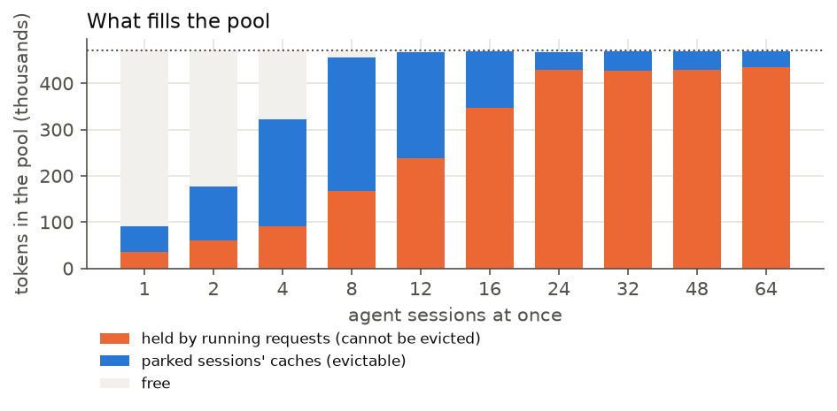
Up to 8 agents the parked caches grow, and there is real choice: 288K tokens of them. Past the cliff, running requests take the pool. With 24 agents they hold 429K of the 472K, and the parked caches are down to 38K, about one agent’s private conversation. There is nobody left to choose between. LFU, SLRU and T-LRU all matched LRU because the policy was ordering a queue with one entry in it. MRU would not have rescued it either: Belady’s curve in Figure 19 assumes the whole pool is up for grabs.
That also explains the mystery above. Longer tool waits mean fewer agents want the GPU at the same moment (Chapter 2 saw the start of this), so fewer requests run and the parked caches get the memory they leave. With a 300 s cap at 24 agents, the parked caches had 103K instead of 38K, and the hit rate followed.
AgentX at 8 agents is the one case with a real choice. About 4.6 agents run and the other 3.4 are parked, with 160K of room between them: about 2.2 of their 72K contexts. Telling the server who comes back soon still changed the hit rate by less than a point. My guess is that on real tool waits, LRU already makes the right call. Figure 9 showed the shape: half the waits are under 2 s, and one in ten is over 181 s. With a tail like that, an agent that has been gone a long time will most likely stay gone, so “least recently used” and “back last” are mostly the same agent. The loop that defeats LRU needs everyone to come back in turn.
When the pool is over-full: preempt or queue?
If eviction only touches parked caches, the other lever is the running requests. A server that has admitted more work than fits can take memory back from a request mid-flight. SGLang calls this retraction: it stops a running request, frees its cache, and recomputes it later, and --retraction-policy chooses the victim. At 36 agents, one and a half times the cliff, I counted how often it happens.
It never did: 0 retractions there, and 0 across all 5,008 requests of Chapter 2’s sweep. SGLang starts a request only when its whole context fits, so overload never reaches a running request. It stays in the queue: 15 running, 17 queued, the pool 91% full, and a median wait of 101 s. That is Chapter 2’s queue again. With nothing retracted, the choice of victim does not matter, so I did not compare policies.
The interesting variant would move a retracted request’s cache to CPU memory instead of recomputing it. SGLang does that only on the decode side of a split prefill/decode deployment, not on one server.
Forking sub-agents
There is one agent pattern where sharing should help a lot. Coding agents spawn sub-agents: a planner hands four files to four workers, each starting from the planner’s whole context plus a short instruction. In the radix tree, each fork is just a new branch off the parent’s path, like agents A and B in Figure 12, but sharing the parent’s whole conversation instead of only a system prompt. So the napkin says a fork should cost only its own tokens: 256 tokens of instruction and a 402-token reply, about 658 tokens against the parent’s 63K.
Four synthetic agents forked 0, 2, 4 or 8 sub-agents at their fourth turn, on both models. Qwen3.5 uses the 256-slot state pool from Chapter 2.
| Sub-agents per fork | Fork hit rate · median wait | Decode step | Memory added at peak, in tokens’ worth | |
|---|---|---|---|---|
| Qwen3-8B | 0 | – | 23 ms | – |
| Qwen3-8B | 2 | 99.6% · 0.13 s | 23 ms | -0.4K |
| Qwen3-8B | 4 | 99.6% · 0.25 s | 24 ms | 0.6K |
| Qwen3-8B | 8 | 99.6% · 0.38 s | 29 ms | 2.6K |
| Qwen3.5-9B | 0 | – | 15 ms | – |
| Qwen3.5-9B | 2 | 99.6% · 0.08 s | 15 ms | -0.5K cache + 6K in state slots |
| Qwen3.5-9B | 4 | 99.6% · 0.13 s | 15 ms | 0.6K cache + 19K in state slots |
| Qwen3.5-9B | 8 | 99.6% · 0.20 s | 16 ms | 3.0K cache + 44K in state slots |
The napkin holds. Every fork found 99.6% of its prompt in the cache, which is all of it except the instruction. Eight forks of a 63K context added 2.6K tokens to the peak, not 8 × 63K. And the parent did not notice: its next turn waited 0.31 s with no forks and 0.31 s with eight.
The costs show up elsewhere. On Qwen3-8B the decode step grew from 23 to 29 ms with 8 forks, because each fork reads the parent’s whole context on every step: the cache is shared, the reading is not. That is R3 again. On Qwen3.5 the step barely moved, since most of its layers read a fixed-size state instead of the context. What Qwen3.5 pays instead is state slots, 5 per running fork. The peak went from 16 slots to 44, 44K tokens’ worth of memory for 8 forks, against 3.0K tokens of cache. On the hybrid model, a fork’s memory goes almost entirely into state.
Command: sessions, priorities and forks
Sessions, with the cache kept for open sessions (--enable-session-radix-cache at launch):
import requests
URL = "http://localhost:30000"
sid = requests.post(URL + "/open_session", json={"capacity_of_str_len": 1 << 30, "timeout": 120}).json()
def turn(rid, ids, prev_rid=None, offset=None):
sp = {"id": sid} | ({"rid": prev_rid, "offset": offset} if prev_rid else {})
r = requests.post(URL + "/generate", json={"rid": rid, "input_ids": ids, "session_params": sp,
"sampling_params": {"max_new_tokens": 300, "temperature": 0, "ignore_eos": True}}).json()
if r["meta_info"]["finish_reason"]["type"] == "abort": # the session expired while this request ran
raise RuntimeError(r["meta_info"]["finish_reason"])
return r
turn("t0", system + task) # each later turn sends only its new tokens,
turn("t1", tool_result, prev_rid="t0", offset=len(system + task)) # spliced in after `offset` tokens of t0
requests.post(URL + "/close_session", json={"session_id": sid})Priorities (--radix-eviction-policy priority): add "priority": 1 to the /generate body for a turn whose tool call will come back soon, 0 otherwise.
A fork is nothing special: send the parent’s prompt plus the sub-agent’s instruction as a new request, and the radix tree finds the shared prefix by itself.
Where this leaves me
Choosing who stays does not help, because past the cliff there is almost nothing left to choose. The memory belongs to the requests that are running, and each of them holds a whole 72K context for about a minute while it decodes (Chapter 2). Below the cliff, LRU is already about right for real tool waits. Two findings are worth keeping anyway, and both are operational. SGLang never preempts a running request, so overload is a queue. And its session timeout counts from a request’s arrival, so a timeout shorter than a slow turn throws the session away.
So the lever is the size of what each running request holds. The next chapters make it smaller.
Chapter 4: Holding it once
Chapter 3 ended on a single lever: the size of what each agent holds. The cheapest way to make it smaller is to not hold anything twice.
The radix tree already does this for one thing. The synthetic agents all start with the same 35K-token system prompt, the tree stores it once (Figure 12), and Chapter 2’s napkin counted it once:
\[ \text{pool} = S + N \cdot (c - S) \qquad\Longrightarrow\qquad N_\text{max} = \frac{\text{pool} - S}{c - S} \]
with \(S\) the shared prefix and \(c\) the context each agent holds. Two questions follow. Is there more than the system prompt to share? And what does sharing cost when the agents belong to different customers?
What sharing leaks
Now let the agents belong to different customers. R6 says one customer must learn nothing about another, and a shared cache is a side channel. A prompt someone else already sent skips its prefill, so it comes back faster, and the speed is visible to whoever sent it second.
How much faster is a matter of arithmetic. Prefilling 4,096 tokens on Qwen3-8B costs about 166 ms on the napkin, and a full hit costs one step, about 18 ms. I measured it as an attack. Customer A either sends a 4,096-token prompt or does not, at random. Then customer B sends the same prompt and times its first token. B wins if it can tell which happened. Over 400 trials:
| Cache | B’s wait if A sent it | B’s wait if not | B’s best guess is right |
|---|---|---|---|
| Shared between customers | 16 ms | 179 ms | 100% |
| Salted per customer | 182 ms | 182 ms | 53% |
With a shared cache the answer is not subtle. A hit returns in 16 ms and a miss in 179 ms, so one threshold is right every time. B does not even need a stopwatch: the response’s cached_tokens field says 4,095 when A was there.
The fix is to salt the cache per customer: mix a per-customer key into the tree, so that two requests only share a prefix if they share the key too.
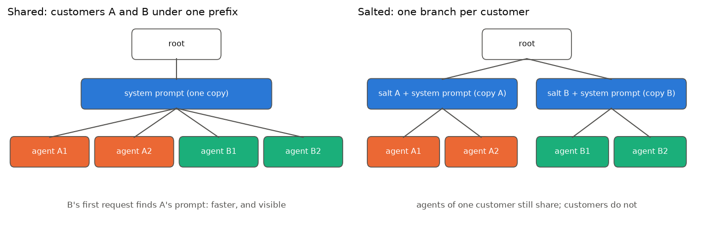
SGLang’s /generate takes such a key as extra_key. With one per customer, B waits the same 182 ms either way, and its guess is right 53% of the time: a coin flip.
Salting costs one copy of the system prompt per customer. With \(T\) customers on the GPU:
\[ N_\text{max}(T) = \frac{\text{pool} - T \cdot S}{c - S} \]
| Customers on the GPU | System prompt copies in the pool | Napkin: agents before the pool is full |
|---|---|---|
| 1 | 35K | 13.2 |
| 2 | 71K | 12.1 |
| 4 | 142K | 10.0 |
With a handful of customers per GPU, that costs a few agents, much less than sharing nothing. It is a cost to choose on purpose: put the salt on the customer, not on the user or the session. Salt per session and every agent carries its own copy, which is the 0% row of the earlier table.
Command: probing a shared cache, and salting it
import random, time, requests
URL = "http://localhost:30000"
def first_token(ids, key=None):
body = {"input_ids": ids, "sampling_params": {"max_new_tokens": 1}} | ({"extra_key": key} if key else {})
t = time.perf_counter()
r = requests.post(URL + "/generate", json=body).json()
return time.perf_counter() - t, r["meta_info"]["cached_tokens"]
for salt in (False, True):
right = 0
for i in range(400):
requests.post(URL + "/flush_cache")
secret = [random.randrange(1000, 150_000) for _ in range(4096)]
present = i % 2 == 0
if present:
first_token(secret, "customer-a" if salt else None) # A sends it, or not
wait, cached = first_token(secret, "customer-b" if salt else None)
right += (wait < 0.08) == present # B guesses from the wait alone
print("salted" if salt else "shared", right / 400)Where this leaves me
Sharing is the one way to make a cache smaller without approximating anything, and on agent traffic there is exactly one thing to share: the prefix. Inside a session, the trace has no out-of-order repeats to recover. Across agents, the system prompt halves what each one holds, and keeping customers apart costs one copy of it per customer.
That still leaves each agent with its own 33K-token conversation, stored in 16-bit numbers. The next factor to attack is the bits.
Chapter 5: Fewer bits
Chapter 0 tried smaller numbers first and found they buy room: an FP8 cache holds twice the tokens, NVFP4 about 3.4 times. It left R4, quality, for later. Sharing has given all it can, so now R4 has to be measured.
How a number loses bits
A floating-point number is stored as a sign, an exponent and a mantissa: \(x = \pm\, 2^{e} \times 1.m\). The exponent sets the scale, and the mantissa sets the precision within that scale. BF16 has 8 exponent bits and 7 mantissa bits. The FP8 format SGLang uses, E4M3, has 4 and 3. That leaves two problems.
- Precision. With 3 mantissa bits, neighbouring numbers are 1/8 apart in relative terms, so rounding moves a number by up to 1/16 of itself: about 6%.
- Range. With 4 exponent bits, the largest E4M3 number is 448 and the smallest normal one is \(2^{-6} \approx 0.016\). Anything smaller loses precision fast, and anything larger does not fit.
To fit the range, numbers are divided by a scale \(s\) before rounding and multiplied back after:
\[ \hat{x} = s \cdot \text{round}_\text{E4M3}\!\left(\frac{x}{s}\right) \]
A good \(s\) puts the largest number near the top of the range. One large number then forces a large \(s\), and every small number around it is pushed down toward the bottom of the range, where precision runs out. NVFP4 (E2M1) can only represent 0, 0.5, 1, 1.5, 2, 3, 4 and 6. It gets away with it by giving every block of 16 numbers its own scale, but within a block, one outlier sets the scale for the other 15.
So whether a cache survives fewer bits depends on how its numbers are spread out. That is something to measure.
How much change is “no measurable change”?
R4 says no measurable change, and that needs a yardstick. The model’s output is not perfectly repeatable even in BF16. GPU kernels add numbers in an order that depends on the batch, and floating-point addition is not associative: \((a + b) + c \neq a + (b + c)\) once rounding is involved. So I measured BF16 against itself first.
The measurement, Q1, compares the next-token probabilities two configurations give. Take 200 windows of real code (SGLang’s own source) between 1K and 128K tokens. Put each window in the cache, then feed the next 512 tokens of the file and record the model’s top-20 next-token probabilities at every one of them. At each position, the distance between the reference distribution \(p\) and the test distribution \(q\) is the KL divergence:
\[ D_\text{KL}(p \,\|\, q) = \sum_{x} p(x) \log \frac{p(x)}{q(x)} \]
0 means identical. I only have the top 20 tokens of each, so I compute it over those tokens plus one bucket for everything else, which gives a lower bound on the full KL.
For the floor, both configurations are the same BF16 server, once with requests one at a time and once 16 at a time:
| KL, BF16 vs BF16 | Same top token | Greedy output identical for (median) | R4 threshold: 5 × floor | |
|---|---|---|---|---|
| Qwen3-8B | 7.3e-04 | 99.3% | 122 tokens | 3.6e-03 |
| Qwen3.5-9B | 8.0e-04 | 99.6% | 240 tokens | 4.0e-03 |
Even BF16 picks a different top token about once in a hundred positions when only the batch changes, and greedy generation from the same prompt drifts apart after a hundred-odd tokens. So “no measurable change” cannot mean zero. I set R4’s threshold at five times this floor: an approximation passes if it moves the model no further than five batch changes would.
A small KL is not the same as a working agent, so I added a second check, Q2, for the task an agent actually does with a long context: find something it read earlier. Each of 100 synthetic sessions hides a fact (a token, a path, a config value) in a tool result, pads the conversation with more tool results until the fact is 4K to 100K tokens back, and then asks for it.
What the smaller numbers cost
| Cache | KL vs BF16 cache (R4 threshold) | Same top token | KL at ≤ 8K / 64–128K context | Facts retrieved | R4 | |
|---|---|---|---|---|---|---|
| Qwen3-8B | BF16 | – | – | – | 77% | – |
| Qwen3-8B | FP8 | 7.4e-03 (3.6e-03) | 97.8% | 5.1e-03 / 9.3e-03 | 79% | fails |
| Qwen3-8B | NVFP4 | 3.4e-02 (3.6e-03) | 95.0% | 2.6e-02 / 4.3e-02 | 78% | fails |
| Qwen3.5-9B | BF16 | – | – | – | 95% | – |
| Qwen3.5-9B | FP8 | 2.1e-03 (4.0e-03) | 99.2% | 1.9e-03 / 1.6e-03 | 96% | passes |
| Qwen3.5-9B | NVFP4 | 4.8e-03 (4.0e-03) | 98.7% | 3.9e-03 / 3.8e-03 | 93% | fails |
Retrieval does not notice. Every format finds the same facts as BF16 to within a couple out of 100, which is the noise of a 100-question test. At these depths, a 4-bit cache still knows where everything is.
The probabilities do notice, and the two models react very differently. On Qwen3-8B, FP8 moves the model 2.0 times as far as R4 allows, and NVFP4 9 times. The damage grows with context: the more cached tokens a step reads, the more rounding error it adds up. Qwen3.5 passes with FP8 and misses by 19% with NVFP4, with no growth with context. That is the hybrid design again. Only 8 of Qwen3.5’s layers keep a cache, so only those 8 read rounded numbers. The cache format does not touch the DeltaNet states.
Keys or values?
Qwen3-8B fails even at FP8, so it is worth knowing where the error comes from. SGLang rounds keys and values together, so this one ran offline in plain PyTorch on Qwen3-8B: 50 windows of 8K tokens of code, with the keys, the values or both rounded to FP8 or NVFP4 before attention reads them, and the same KL against unrounded BF16. I tried two scales: \(s = 1\), which is what SGLang uses when it has no calibration, and one calibrated per layer from the largest number seen on 8 other windows.
| Rounded | FP8, scale 1 | FP8, calibrated | NVFP4 | NVFP4, calibrated |
|---|---|---|---|---|
| Keys only | 2.5e-03 | 2.0e-03 | 1.1e-02 | 9.8e-03 |
| Values only | 4.1e-04 | 3.9e-04 | 6.7e-04 | 6.4e-04 |
| Both | 2.6e-03 | 2.0e-03 | 1.2e-02 | 1.0e-02 |
It is the keys. Rounding only the values costs almost nothing in either format, and rounding only the keys costs nearly everything that rounding both does. My first guess was outliers, and the calibration pass recorded the range of both:
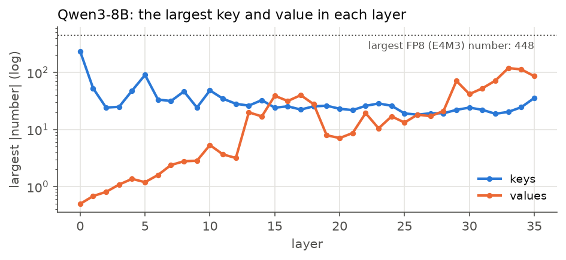
The guess is half right. In the first layers, keys do carry numbers hundreds of times bigger than the values: 234 against 0.5 in layer 0. But from layer 28 on, the largest values are bigger than the largest keys, and rounding values still costs almost nothing. So range is not what separates them. Where the error goes is.
An error in a key hurts more than the same error in a value. A key enters attention through a dot product with every query, and the result goes into an exponent:
\[ \text{softmax}\!\left(\frac{q \cdot (k + \epsilon)}{\sqrt{H}}\right) \propto \exp\!\left(\frac{q \cdot k}{\sqrt{H}}\right) \cdot \exp\!\left(\frac{q \cdot \epsilon}{\sqrt{H}}\right) \]
So a rounding error in \(k\) multiplies the attention weight, for every query that looks at it. A rounding error in \(v\) only adds a little noise to one term of an average, and averages forgive noise.
Calibrated scales help, but only by 22% for FP8. Applied to the served measurement, that would take Qwen3-8B’s FP8 from 7.4e-03 to about 5.7e-03, still above R4’s 3.6e-03. So I did not rerun the served test with calibrated scales.
Nor is there one bad layer that could stay in BF16. Rounding a single layer’s keys to NVFP4, the worst layer costs only 1.6× the median layer. The error is spread across the model.
The cheap option this points at is mixed formats, with values in 4 bits and keys in 8. SGLang 0.5.23 has one --kv-cache-dtype for both, so I could not serve it.
Where the cliff moves
Quality aside, does the room show up as agents? On the napkin, each format changes only the bytes-per-token term, so the cliff should move with the pool. I reran Chapter 2’s synthetic sweep in each format.
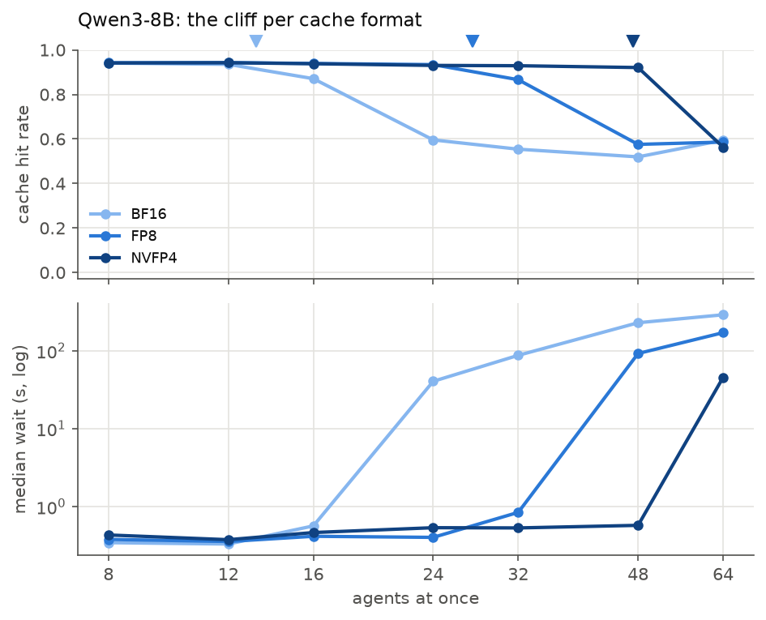
| Qwen3-8B cache | Token pool | Napkin: agents before it is full | Last point before the cliff | p90 wait there | Tokens/s per user there |
|---|---|---|---|---|---|
| BF16 | 0.47 M | 13 | 16 | 9.1 s | 18 |
| FP8 | 0.94 M | 27 | 32 | 7.8 s | 10 |
| NVFP4 | 1.60 M | 47 | 48 | 4.0 s | 7 |
The napkin holds again. Each halving of the bytes moves the cliff out by about the factor the pool grew. But the points before the cliff do not pass the other requirements: the p90 wait is past R2 everywhere, and each user’s speed falls as more agents decode together, because every step still reads every cached token, only in fewer bytes.
The step does get cheaper per token, and by about what Chapter 0’s decode formula says, with the bytes per token halved or quartered:
| Qwen3-8B, batch × context | BF16 | FP8 | NVFP4 | Napkin, BF16 / FP8 / NVFP4 |
|---|---|---|---|---|
| 1 × 16K | 13.1 ms | 12.5 ms | 12.2 ms | 12 / 11 / 11 ms |
| 16 × 16K | 37.3 ms | 25.7 ms | 21.8 ms | 37 / 24 / 18 ms |
| 4 × 64K | 37.1 ms | 24.8 ms | 20.2 ms | 37 / 24 / 18 ms |
NVFP4 comes in a little slower than its bytes say, probably the cost of unpacking 4-bit numbers and their scales. With one request it hardly matters, because the step is mostly reading the weights.
Qwen3.5: the other pool runs out
Qwen3.5 did not follow the napkin. Its token pool doubles with FP8 and nearly triples with NVFP4, but its cliff stayed where it was:
| Qwen3.5 cache, state slots | Token pool | Napkin | 48 agents: hit rate · median wait | 64 agents: hit rate · median wait | At 64: running, queued |
|---|---|---|---|---|---|
| BF16, 256 | 1.64 M | 48 | 79% · 1.3 s | 56% · 21.6 s | 49, 8 |
| FP8, 256 | 3.28 M | 98 | 81% · 1.0 s | 60% · 19.4 s | 50, 7 |
| NVFP4, 256 | 4.77 M | 143 | 80% · 0.9 s | 60% · 20.6 s | 50, 7 |
| FP8, 512 | 2.48 M | 74 | 93% · 0.3 s | 91% · 0.4 s | 49, 0 |
The first three rows are Chapter 2’s state pool again. Every run in this chapter used the 256 slots Chapter 2 chose, and Qwen3.5 has two pools with two limits. With \(R\) requests running and \(P\) agents parked:
\[ 5R + P \le \text{slots} \qquad\text{and}\qquad \text{slots} \cdot \sigma + \text{tokens} \cdot b_\text{token} = \text{budget} \]
The first says how many can run: at most 51 with 256 slots. The second says the two pools share one budget, so every slot costs as much memory as \(\sigma / b_\text{token}\) cached tokens. At 64 agents with NVFP4, 50 were running and 7 waiting, with the token pool only 80% full. Shrinking the tokens made more room in the pool that was not running out.
So the split has to move again. 256 slots were right when tokens were the scarce pool. With FP8, \(b_\text{token}\) halves, so a slot costs as much as 3,144 cached tokens instead of 1,572, and there are tokens to spare. With 512 slots, the token pool shrinks to 2.48 M, still room for 74 agents, and up to 102 requests can run. At 64 agents the hit rate went from 60% to 91%, and the median wait from 19 s to 0.38 s. That is the first configuration in this post where 64 agents fit.
They fit, but they do not yet pass. The p90 wait at 64 is 3.4 s, and each user gets 15 tokens/s: R2 and R3 still fail.
Command: a smaller cache, a bigger state pool, and Q1
python -m sglang.launch_server --model-path Qwen/Qwen3.5-9B \
--context-length 131072 --mem-fraction-static 0.85 --enable-metrics \
--kv-cache-dtype fp8_e4m3 --max-mamba-cache-size 512 # or nvfp4; bf16 is the defaultQ1 needs the model’s probabilities at every position of a continuation. SGLang returns them for prompt tokens too, from logprob_start_len on:
import requests
URL = "http://localhost:30000"
def tail_topk(context, continuation, k=20):
requests.post(URL + "/generate", json={"input_ids": context, "sampling_params": {"max_new_tokens": 1}}) # cache P
r = requests.post(URL + "/generate", json={
"input_ids": context + continuation, "sampling_params": {"max_new_tokens": 1},
"return_logprob": True, "logprob_start_len": len(context) - 1, "top_logprobs_num": k}).json()
return r["meta_info"]["input_top_logprobs"] # one top-k list per continuation positionRun it against each server, then compare the lists position by position.
Where this leaves me
| Synthetic traffic, FP8 cache | Qwen3-8B, at its cliff (32 agents) | Qwen3.5-9B, 32 agents, 256 slots | Qwen3.5-9B, 64 agents, 512 slots |
|---|---|---|---|
| R2: continuation p90 (target < 1 s) | 7.8 s | 2.0 s | 3.4 s |
| R3: tokens/s per user (target ≥ 30) | 10 | 33 | 15 |
| R4: KL vs BF16 (threshold) | 7.4e-03 (fails) | 2.1e-03 (passes) | same cache as left |
Fewer bits buy what the napkin says they buy, and on Qwen3.5 they are close to free: FP8 passes R4, retrieval does not move, and with the state pool resized, 64 agents fit on one GPU. On Qwen3-8B the same trick doubles the agents and fails R4, because every rounding error in a key lands in attention’s exponent.
What none of it fixes is speed. Every running agent still reads its whole context on every step, and at 64 agents that is the bottleneck.
Chapter 6: Reading less
At 64 agents on Qwen3.5, each user gets 15 tokens/s. Chapter 0’s decode formula says why:
\[ t_\text{step}(B, S) = \frac{B \cdot (S \cdot b_\text{token} + 2\sigma)}{W} + \max\left(\frac{2BP}{C}, \frac{2P}{W}\right) \]
Every step reads all the weights once, plus every running agent’s whole cache. At \(B\) = 64 agents of \(S\) = 69K tokens, in FP8, that is 94 GB per step, or 65 ms at the bandwidth Chapter 0 measured: at most 15 tokens/s per user, exactly what the run got. R3 wants 30. There are two ways to change the formula. Read fewer of the \(S\) tokens per step, or get more than one token out of each step.
Dropping tokens
The direct way to read less is to keep less. Token eviction throws away the cached tokens it guesses will not matter again, permanently. Two well-known guesses:
- StreamingLLM (Xiao et al., 2024) keeps the first few tokens and a recent window. The first few matter because attention has to put its weight somewhere, and models learn to park spare weight on the first tokens (they are called attention sinks).
- SnapKV (Li et al., 2024) keeps the recent window plus the older tokens that window attended to most. With \(a_{t,i}\) the attention token \(t\) pays to token \(i\), each old token is scored by \(\sum_{t \in \text{window}} a_{t,i}\), and the top ones stay.
An agent’s cache has to be compressed before its next turn exists, so I ran SnapKV without knowing the question: it scores the tokens by the attention of the context’s own last 32 tokens. SGLang does not evict tokens from inside a sequence, so this ran offline in PyTorch on Qwen3-8B, with 32K-token windows of code and the same KL as Chapter 5.
| Cache kept | StreamingLLM: KL · same top token | SnapKV: KL · same top token |
|---|---|---|
| 50% | 5.6e-02 · 96.9% | 8.7e-03 · 98.8% |
| 25% | 1.4e-01 · 94.2% | 3.9e-02 · 97.2% |
| 10% | 2.1e-01 · 92.4% | 1.4e-01 · 94.2% |
Nothing here passes R4 (3.6e-03). SnapKV at half the cache moves the model 2.4 times as far as allowed, about what FP8 did for the same 2× saving, and it gets much worse below half. StreamingLLM ignores what is in the context and is worse at every budget. Agent contexts do not have a recent part that matters and an old part that does not: the file read twenty turns ago is still the file being edited.
Reading only what matters
Eviction makes its guess once and lives with it. Sparse attention keeps the whole cache in memory and, at each step, reads only the parts that step needs. That saves no memory. It attacks the reads, which are what R3 is short of.
The bet is that attention is concentrated. If the blocks a step reads capture most of its attention weight, the output barely changes, because the output is a weighted average of values and the skipped ones had little weight. Write \(m_k\) for the share of attention the best \(k\) blocks capture:
\[ m_k = \sum_{i \in \text{top-}k \text{ blocks}} a_{t,i} \]
How far could that go, in the best case? I measured it with an oracle. At each of 32 decode steps over a 32K-token context, I computed the real attention, picked the \(k\) 64-token blocks that got the most of it in each layer, and reran the step with attention restricted to those blocks.
| Blocks read per layer | Tokens read | Share of the context | Attention captured: mean · worst layer | KL | Same top token |
|---|---|---|---|---|---|
| 4 | 256 | 0.8% | 61% · 39% | 7.5e-02 | 94.8% |
| 8 | 512 | 1.6% | 71% · 47% | 3.6e-02 | 96.0% |
| 16 | 1,024 | 3.1% | 81% · 57% | 1.4e-02 | 97.3% |
| 32 | 2,048 | 6.2% | 88% · 68% | 5.6e-03 | 98.2% |
| 64 | 4,096 | 12.5% | 93% · 78% | 1.9e-03 | 98.8% |
Put next to eviction, on the share of the cache each one uses:
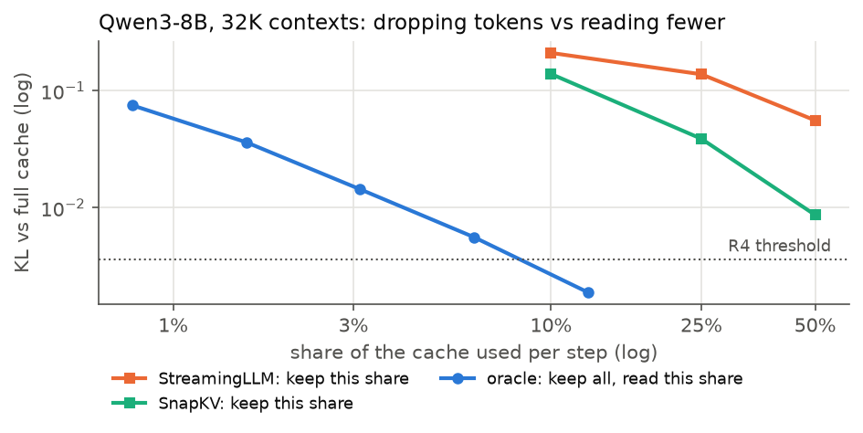
Reading 12.5% of the context, the right 4,096 tokens, captures 93% of the attention and moves the model by 1.9e-03, inside R4. That is about the change FP8 made to Qwen3.5, for an eighth of the cache reads. Using an eighth is far better than keeping half, because the right eighth is different at every step, and eviction has to pick one set for all of them.
But it is an oracle. It needs the full attention to know which blocks to read, and the full attention is the read it is trying to avoid. Real sparse-attention methods guess the blocks from a cheap summary of each one, and they will miss some of that mass. SGLang 0.5.23 has nothing like it for these two models, so on this stack the saving stays on paper.
More tokens per read
The other way is to make each step produce more than one token. Qwen3.5 ships with a small extra head trained to guess the next few tokens (multi-token prediction). In speculative decoding (Leviathan et al., 2023), that head drafts \(d\) tokens, and one step of the big model checks all of them at once: it computes what it would have written at each of the \(d + 1\) positions and keeps the drafts up to the first one it disagrees with. When most drafts are accepted, one read of the weights and the cache yields several tokens. With \(a\) tokens kept per step,
\[ \text{tokens/s per user} = \frac{a}{t_\text{step}} \]
and the step costs about the same as a normal one, as long as checking \(d + 1\) tokens instead of one does not run out of compute.
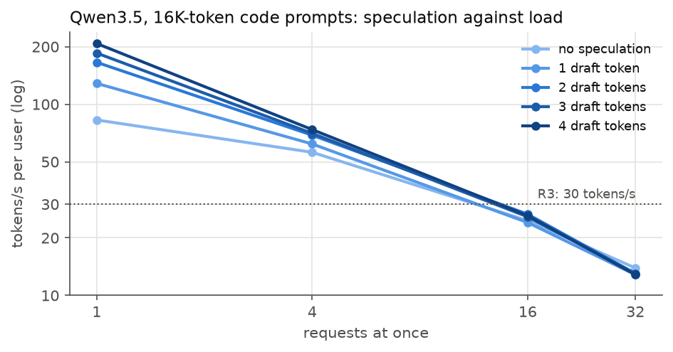
| Draft tokens | Tokens kept per step | Token pool | Tokens/s per user at 1 / 4 / 16 / 32 requests |
|---|---|---|---|
| none | 1.0 | 1.64 M | 83 / 56 / 25 / 14 |
| 1 | 1.9 | 1.20 M | 129 / 62 / 24 / 13 |
| 2 | 2.8 | 1.13 M | 166 / 69 / 27 / 13 |
| 3 | 3.5 | 1.06 M | 185 / 70 / 26 / 13 |
| 4 | 4.2 | 0.99 M | 208 / 74 / 26 / 13 |
These are real code prompts, so the acceptance is honest: with 4 draft tokens, 4.2 are kept per step. With one request at a time, that is 2.5× the speed.
At 16 and 32 requests the gain is gone, and the napkin says why. Each request here is a 16K-token prompt with a 256-token reply. At 32 at a time, the server finished 1.0 requests per second, and prefilling their prompts alone needs 68% of the GPU’s compute. The GPU is busy with prefill, which speculation does not speed up, and the decode steps squeezed in between are long because they share the GPU with it. Checking 5 tokens instead of 1 then costs compute the GPU does not have.
Speculation also takes memory: the draft head and its own cache shrank the token pool from 1.64 M to 0.99 M. For many agents on one GPU, it is the wrong trade. For a few agents that need to be fast, it is the best one in this post.
A related worry was the hybrid’s fixed cost. Every Qwen3.5 request reads and writes its DeltaNet state, \(2\sigma\), every step, whatever the context length. At short contexts that could have made it slower than Qwen3-8B. It does not, measurably:
| Decode step | 1 request, 1K | 1 request, 2K | 16 requests, 1K | 16 requests, 2K |
|---|---|---|---|---|
| Qwen3-8B | 11.6 ms | 11.7 ms | 13.5 ms | 15.1 ms |
| Qwen3.5-9B | 11.7 ms | 11.7 ms | 13.3 ms | 13.7 ms |
The same run also timed 8K and 32K contexts, but two of those points disagree with Chapter 0’s measurements of the same thing, so I left them out until I know why.
Command: speculative decoding with Qwen3.5’s own draft head
python -m sglang.launch_server --model-path Qwen/Qwen3.5-9B \
--context-length 131072 --mem-fraction-static 0.85 --enable-metrics \
--speculative-algorithm NEXTN --speculative-draft-model-path Qwen/Qwen3.5-9B \
--speculative-num-steps 4 --speculative-eagle-topk 1 --speculative-num-draft-tokens 5The response’s meta_info reports spec_accept_length, the tokens kept per step. The server also caps running requests at 48 when speculation is on, and says so in its log.
Where a Qwen3.5 fork can start
Chapter 0 left a warning: a DeltaNet state is a blend of everything before it, so Qwen3.5 can only resume from a point where a snapshot was saved. Chapter 3’s forks all branched at the end of a turn, where one always is. A sub-agent can also branch from the middle of one, for example right after the planner wrote its plan but before the tool output that followed. I built a 4-turn parent with 4,096-token turns and forked it at positions on and off turn boundaries.
| Fork after token | 1,000 | 4,000 | 4,096 | 6,000 | 8,192 | 10,000 | 16,384 |
|---|---|---|---|---|---|---|---|
| Qwen3-8B: tokens reused | 1,000 | 4,000 | 4,096 | 6,000 | 8,192 | 10,000 | 16,384 |
| Qwen3.5, any snapshot interval | 0 | 0 | 4,096 | 4,096 | 8,192 | 8,192 | 16,384 |
Qwen3-8B reuses the parent’s cache up to the exact token. Qwen3.5 reuses it only up to the last turn boundary, whatever snapshot interval I set: --mamba-track-interval of 64, 256 and 1024 tokens all gave the same row. The warning came true. SGLang saved a state at the end of each request, not every 64 tokens, and a fork inside the first turn reuses nothing at all.
Where this leaves me
The reads are the problem now, and on this stack they stay the problem. Dropping tokens fails R4 at any budget worth having. Reading only the right tokens would work, but only an oracle knows which they are, and SGLang does not offer the approximation for these models. Speculation helps a single agent by 2.5× and many agents not at all.
That leaves one direction from Chapter 2 untried: putting the caches that do not fit somewhere bigger than GPU memory.
Chapter 7: Bigger than GPU memory
Chapter 0 measured two places bigger than GPU memory (Table 10): this machine’s 176 GB of CPU memory, behind a 57 GB/s link, and a disk at 1.7 GB/s. Chapter 3 showed what needs them: the caches of parked agents, which the GPU pool keeps evicting. SGLang can put both behind the pool as tiers (--enable-hierarchical-cache). A cache evicted from the GPU is kept in CPU memory, and when its agent comes back, it is copied back instead of recomputed.
Whether that pays is a race between a copy and a rebuild. For an agent returning with \(c\) private tokens:
\[ t_\text{copy} = \frac{c \cdot b_\text{token}}{W_\text{link}} \qquad\text{vs}\qquad t_\text{rebuild} = \frac{\text{FLOPs}_\text{prefill}(c \mid S \text{ cached})}{C} \]
For one synthetic agent’s 33K private tokens on Qwen3-8B, the copy moves 4.9 GB:
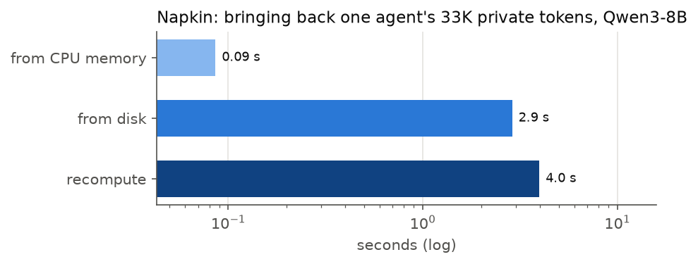
CPU memory wins by a mile. The disk is roughly a wash with recomputing.
CPU memory
--hicache-ratio sets the CPU pool’s size as a multiple of the GPU pool’s. I ran Chapter 2’s synthetic sweep with ratios 1 and 2 on both models, out to 96 agents.
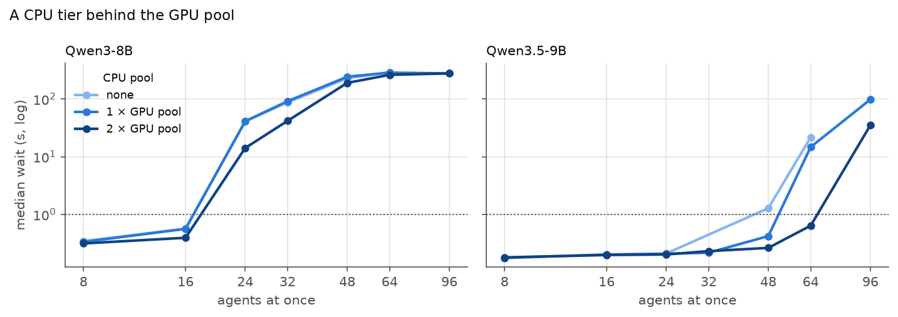
| CPU pool | Hit rate at 16 / 32 / 48 / 64 / 96 agents | |
|---|---|---|
| Qwen3-8B | none | 87% / 55% / 52% / 59% / – |
| Qwen3-8B | 1 × GPU pool | 88% / 57% / 53% / 61% / – |
| Qwen3-8B | 2 × GPU pool | 94% / 91% / 71% / 65% / – |
| Qwen3.5-9B | none | – / – / 79% / 56% / – |
| Qwen3.5-9B | 1 × GPU pool | 93% / 94% / 88% / 68% / 59% |
| Qwen3.5-9B | 2 × GPU pool | 93% / 94% / 94% / 94% / 93% |
Ratio 1 does almost nothing for Qwen3-8B, and that is by design. By default SGLang copies every page to the CPU pool as soon as it is computed (write-through), so the CPU pool holds a copy of the GPU pool before it holds anything else. With a GPU pool \(G\) and ratio \(r\), what the two tiers hold between them is
\[ \text{unique capacity}_\text{write-through} = G + (r - 1)\,G = r\,G \]
At ratio 1, that is just \(G\): the copy is all it holds. At ratio 2 there is a second pool’s worth of room, and the hit rate holds at 91% out to 32 agents, where without it the cliff was at 16.
The hits did not bring the wait down, though: 42 s at 32 agents. That is Chapter 3’s lesson from the other side. CPU memory can keep a parked agent’s cache. But a running request still needs its whole context in GPU memory, and Qwen3-8B’s GPU pool runs about 13 synthetic agents at a time. Past that they queue, cache or no cache. The CPU tier turns their rebuild into a copy. It does not give them a seat.
Qwen3.5 has the bigger GPU pool, so it gets the seats. With ratio 2 it keeps a 94% hit rate and a 0.6 s median wait at 64 agents, in BF16 with the old 256 state slots. At 96 it queues again: 51 running at most, Chapter 5’s limit. Ratio 1 already helped at 48 agents on Qwen3.5, which the write-through copy does not explain. I have not looked into why.
When to copy
If write-through spends the CPU pool on copies, the policy should matter. --hicache-write-policy has three settings. Write-through copies every page. Write-through-selective copies only pages that have been hit a few times. Write-back copies a page only when the GPU evicts it, so the CPU pool holds nothing the GPU still has:
\[ \text{unique capacity}_\text{write-back} = G + r\,G \]
Same point, 48 agents on Qwen3-8B, ratio 2:
| Write policy | Unique capacity, GPU + CPU | Hit rate | Median wait |
|---|---|---|---|
| write-through (default) | G + G | 70% | 196 s |
| write-through, selective | G + the pages hit often | 51% | 229 s |
| write-back | G + 2G | 90% | 150 s |
Write-back turns the same CPU memory into half again as much unique capacity, and the hit rate goes from 70% to 90%. Selective is the worst of the three. My reading is that an agent’s cache is used by one agent a few times, so “hit often” rarely singles one out, and most of them never reach the CPU pool at all. The wait improved too, 196 s to 150 s, but it is still minutes, for the reason above: 48 agents is far past what Qwen3-8B can run at once.
For agents, the default is the wrong choice. Write-through’s advantage is that a page already has its copy when the GPU evicts it, so eviction never waits on the link.
The disk
Below CPU memory, SGLang’s file backend writes pages to disk and prefetches them back when a request matches them. --hicache-storage-prefetch-policy decides whether a request waits for the whole prefetch (wait_complete), takes what has arrived (best_effort), or waits up to a timeout. I ran 48 and 96 agents on Qwen3-8B with a CPU pool of ratio 1 and the disk behind it.
| Prefetch policy | 48 agents: hit rate · median wait | 96 agents: median wait |
|---|---|---|
best_effort |
55% · 233 s | 285 s |
wait_complete |
57% · 209 s | 278 s |
timeout |
56% · 221 s | 278 s |
| no disk, no CPU pool (Chapter 2) | 52% · 229 s | – |
The disk changed nothing, which is what Figure 26 said: a page from disk costs about what recomputing it does, and these agents are queued for seats anyway.
One caveat on this run. SGLang ignores its own flags for where the file backend writes, and takes the directory only from the environment variable SGLANG_HICACHE_FILE_BACKEND_STORAGE_DIR. Without it, pages go to /tmp/hicache, which here grew to 415 GB, and my harness emptied a different directory between policies. So the second and third policies started with the first one’s pages on disk. That can only have helped them, and they still gained nothing.
Command: CPU and disk tiers
export SGLANG_HICACHE_FILE_BACKEND_STORAGE_DIR=/data/hicache # otherwise /tmp/hicache, with no size limit
python -m sglang.launch_server --model-path Qwen/Qwen3-8B \
--json-model-override-args '{"rope_scaling":{"rope_type":"yarn","factor":4.0,"original_max_position_embeddings":32768},"max_position_embeddings":131072}' \
--context-length 131072 --mem-fraction-static 0.85 --enable-metrics \
--enable-hierarchical-cache --hicache-ratio 2 --hicache-write-policy write_back \
--hicache-storage-backend file --hicache-storage-prefetch-policy wait_complete # the disk tier; drop for CPU onlyThe response’s meta_info.cached_tokens_details splits each hit into device, host and storage tokens.
References
- Ainslie, J., Lee-Thorp, J., de Jong, M., Zemlyanskiy, Y., Lebrón, F., & Sanghai, S. (2023). GQA: Training Generalized Multi-Query Transformer Models from Multi-Head Checkpoints. EMNLP 2023. arXiv:2305.13245
- Austin, J., et al. (2025). How to Scale Your Model. jax-ml.github.io/scaling-book
- Belady, L. A. (1966). A study of replacement algorithms for a virtual-storage computer. IBM Systems Journal, 5(2), 78–101.
- Katharopoulos, A., Vyas, A., Pappas, N., & Fleuret, F. (2020). Transformers are RNNs: Fast Autoregressive Transformers with Linear Attention. ICML 2020. arXiv:2006.16236
- Leviathan, Y., Kalman, M., & Matias, Y. (2023). Fast Inference from Transformers via Speculative Decoding. ICML 2023. arXiv:2211.17192
- Li, Y., et al. (2024). SnapKV: LLM Knows What You are Looking for Before Generation. arXiv:2404.14469
- Little, J. D. C. (1961). A Proof for the Queuing Formula: L = λW. Operations Research, 9(3), 383–387.
- Xiao, G., Tian, Y., Chen, B., Han, S., & Lewis, M. (2024). Efficient Streaming Language Models with Attention Sinks. ICLR 2024. arXiv:2309.17453
- Yang, S., Kautz, J., & Hatamizadeh, A. (2025). Gated Delta Networks: Improving Mamba2 with Delta Rule. ICLR 2025. arXiv:2412.06464
- Yao, J., et al. (2024). CacheBlend: Fast Large Language Model Serving for RAG with Cached Knowledge Fusion. arXiv:2405.16444
- Zhang, et al. (2025). The T-LRU eviction policy. arXiv:2510.15152
Runs referenced
| Run | What | Artifacts |
|---|---|---|
p0-micro |
Matmul peak, memory bandwidth, CPU–GPU link | results/gpu-rtx/phase_b/micro.json |
p0-disk |
Disk bandwidth | results/gpu-rtx/phase_b/nvme.txt |
p0-m5 |
Cache capacity per model × number format | results/gpu-rtx/phase_b/m5_capacity.json, logs/m5/ |
p0-m3m4 |
Prefill and decode timing, cache reuse off | results/gpu-rtx/phase_b/m3m4_{q3-8b,q35-9b}.json, logs/m3m4/ |
pa-features |
SGLang 0.5.23 feature-support audit | results/gpu-rtx/phase_a/feature_support.md |
e1a |
Prefix caching on and off: 8 synthetic sessions × 12 turns, 4 at a time, 3 runs per configuration | results/gpu-rtx/e1/e1a_*.json, logs/gpu-rtx/e1/ |
e1b |
Habits that break the prefix (clock, tool reorder, dropped replies, all three), same workload, 1 run each | results/gpu-rtx/e1/e1b_*.json, logs/gpu-rtx/e1/ |
e1c |
Pinning the shared system prompt: LRU vs priority eviction, 48 synthetic sessions, 900 s, 2 runs each | results/gpu-rtx/e1/e1c_*.json, logs/gpu-rtx/e1/ |
e2a |
The cliff: 1–64 sessions at once, synthetic (2 seeds) and AgentX, both models, BF16 cache | results/gpu-rtx/e2/e2a_*.json, logs/gpu-rtx/e2/ |
e2b |
Tool-wait cap 2, 10, 30 s at 12, 24 and 48 sessions, Qwen3-8B, synthetic seed 0 (the 60 s cap is e2a) |
results/gpu-rtx/e2/e2b-gap*.json, logs/gpu-rtx/e2/ |
e2c |
Page size 1, 16, 64, 128: 24 synthetic sessions (seed 0) on Qwen3-8B, plus decode step at 16K context, batch 1/4/16, cache reuse off | results/gpu-rtx/e2/e2c-page*.json, logs/gpu-rtx/e2/ |
e2d |
Qwen3.5 state pool: default (614), 256, 128, 64 slots, at 24, 48, 64 synthetic sessions (seed 0) | results/gpu-rtx/e2/e2d-mamba*.json, logs/gpu-rtx/e2/ |
e3a |
Eviction policy LFU, SLRU, T-LRU (threshold 6,233, next-prompt estimate 3,270) at 12, 24, 48 synthetic sessions (seed 0), Qwen3-8B; LRU is e2a |
results/gpu-rtx/e3/e3a-*.json, logs/gpu-rtx/e3/ |
e3b |
Client-side retention: priority 1 if the agent is back within 10 or 60 s, plus an LRU baseline; 24 sessions, 300 s cap, synthetic and AgentX, Qwen3-8B | results/gpu-rtx/e3/e3b*.json, logs/gpu-rtx/e3/ |
e3b2 |
SGLang sessions with --enable-session-radix-cache, timeout 30, 120, 300 s; same points as e3b |
results/gpu-rtx/e3/e3b2_*.json, logs/gpu-rtx/e3/e3b2.log |
diag-session |
Session timeout: a continuation 1 s and 10 s after a 5 s-timeout session’s first turn | results/gpu-rtx/e3/diag_session_ttl.json, scripts/diag_session_ttl.py |
e3c |
Overload at 36 synthetic sessions (1.5 × the cliff), --retraction-policy length, Qwen3-8B |
results/gpu-rtx/e3/e3c-*.json, logs/gpu-rtx/e3/ |
e3d |
Forking: 4 synthetic sessions forking 0, 2, 4, 8 sub-agents at their fourth turn, both models (Qwen3.5 with 256 state slots) | results/gpu-rtx/e3/e3d_*.json, logs/gpu-rtx/e3/ |
e3e |
LRU vs priority (60 s) vs sessions (120 s) at 48 synthetic and 8 AgentX sessions, 300 s cap, Qwen3-8B | results/gpu-rtx/e3/e3e_*.json, logs/gpu-rtx/e3/ |
e4a |
Repeated content outside a prefix: every AgentX session’s 64-token block fingerprints, walked in order | results/gpu-rtx/e4/e4a_repeats.json |
e4c |
Shared system prompt for 0%, 50%, 100% of agents (the rest carry a private copy), 24 synthetic agents, Qwen3-8B | results/gpu-rtx/e4/e4c_shared*.json, logs/gpu-rtx/e4/e4c.log |
e4d |
Timing side channel: 400 trials of a 4,096-token prompt sent or not by customer A, probed by customer B, shared and salted (extra_key), Qwen3-8B |
results/gpu-rtx/e4/e4d_timing.json, logs/gpu-rtx/e4/e4d.log |
e5floor |
Noise floor: Q1 on BF16 against itself, 1 vs 16 requests at a time, 200 code windows of 1K–128K tokens, both models; R4 threshold = 5 × floor | results/gpu-rtx/phase_b/q1_*_noise_floor.json, results/gpu-rtx/phase_b/r4_threshold_*.json |
e5b |
Quality per cache format: Q1 divergence vs BF16 cache and Q2 retrieval (100 facts at 4K–100K tokens back), BF16/FP8/NVFP4, both models | results/gpu-rtx/e5/e5b_*.json, results/gpu-rtx/e5/q1_*, results/gpu-rtx/e5/q2_* |
e5a |
The cliff per cache format: 8–64 synthetic agents (seed 0), FP8 and NVFP4, both models (Qwen3.5 with 256 state slots), plus decode step at 16K and 64K | results/gpu-rtx/e5/e5a*.json, logs/gpu-rtx/e5/ |
e5d |
Keys vs values, offline PyTorch on Qwen3-8B: 50 code windows of 8K, K/V/both rounded to FP8 or NVFP4, unit or calibrated scales, all layers and one layer at a time | results/gpu-rtx/e5/e5d.json, logs/gpu-rtx/e5d.log |
e5e |
Qwen3.5, FP8 cache, 512 state slots, 48 and 64 synthetic agents (seed 0) | results/gpu-rtx/e5/e5e-*.json, logs/gpu-rtx/e5/ |
e6a |
Token eviction, offline PyTorch on Qwen3-8B: StreamingLLM and question-agnostic SnapKV at 10/25/50% of 32K-token code contexts, KL vs full cache | results/gpu-rtx/e6/e6a.json, logs/gpu-rtx/e6a.log |
e6b |
Oracle sparse attention, offline on Qwen3-8B: per-layer top-k 64-token blocks at each of 32 decode steps over 32K contexts, KL and attention mass captured | results/gpu-rtx/e6/e6b.json, logs/gpu-rtx/e6b.log |
e9a |
Speculative decoding with Qwen3.5’s MTP head, 0–4 draft tokens, 16K-token code prompts, 1/4/16/32 at a time | results/gpu-rtx/e9/e9a_*.json, logs/gpu-rtx/e9/ |
e7b |
Decode step at 1K–32K context, batch 1 and 16, both models, cache reuse off | results/gpu-rtx/e7/e7b_*.json, logs/gpu-rtx/e7/ |
e7c |
Fork position: 4 × 4,096-token parent turns, forks at 512–16,384 tokens, Qwen3-8B and Qwen3.5 with --mamba-track-interval 64/256/1024 |
results/gpu-rtx/e7/e7c_*.json, logs/gpu-rtx/e7/ |
e8a |
CPU tier: --hicache-ratio 1 and 2, 8–96 synthetic agents (seed 0), both models (Qwen3.5 with 256 state slots) |
results/gpu-rtx/e8/e8a-*.json, logs/gpu-rtx/e8/ |
e8b |
Disk tier (file backend), prefetch policy best_effort/wait_complete/timeout, 48 and 96 agents, Qwen3-8B, CPU ratio 1 | results/gpu-rtx/e8/e8b-*.json, logs/gpu-rtx/e8/ |
e8c |
CPU-tier write policy write_through/write_through_selective/write_back, 48 agents, Qwen3-8B, ratio 2 | results/gpu-rtx/e8/e8c-*.json, logs/gpu-rtx/e8/ |